<!doctype html>
<html lang="en">
<head>
  <meta charset="utf-8">
  <meta name="viewport" content="width=device-width, initial-scale=1">
  <title>arxiv digest — 2026-06-16</title>
  <style>
:root {
  --bg: #ffffff;
  --fg: #1f2328;
  --muted: #59636e;
  --border: #d0d7de;
  --card: #f6f8fa;
  --link: #0969da;
}
body {
  max-width: 980px;
  margin: 0 auto;
  padding: 2rem 1rem 5rem;
  font-family: -apple-system, BlinkMacSystemFont, "Segoe UI", Helvetica, Arial, sans-serif;
  line-height: 1.55;
  color: var(--fg);
  background: var(--bg);
}
a { color: var(--link); }
img { max-width: 100%; height: auto; }
pre, code { background: var(--card); border-radius: 6px; }
pre { padding: 1rem; overflow-x: auto; }
blockquote { border-left: 4px solid var(--border); padding-left: 1rem; color: var(--muted); }
details { margin: 0.6rem 0; }
summary { cursor: pointer; font-weight: 600; }
.paper-figures-scroll {
  display: flex;
  gap: 1rem;
  overflow-x: auto;
  overscroll-behavior-x: contain;
  padding: 0.75rem 0.25rem 1rem;
  margin: 1rem 0 1.25rem;
  border-top: 1px solid var(--border);
  border-bottom: 1px solid var(--border);
  scroll-snap-type: x proximity;
}
.paper-figure-card {
  flex: 0 0 min(260px, 72vw);
  scroll-snap-align: start;
  background: var(--card);
  border: 1px solid var(--border);
  border-radius: 12px;
  padding: 0.55rem;
}
.paper-figure-card img {
  display: block;
  width: 100%;
  max-height: 240px;
  object-fit: contain;
  background: white;
  border-radius: 8px;
}
.paper-figure-caption {
  display: block;
  margin-top: 0.5rem;
  color: var(--muted);
  font-size: 0.85rem;
}
.figure-strip-hint {
  color: var(--muted);
  font-size: 0.9rem;
  margin-bottom: -0.3rem;
}
</style>
  <!-- MathJax: renders $...$ inline math and $$...$$ display math, plus
       \(...\) and \[...\]. Loaded from the official CDN; works offline
       once cached. Configured to skip code/pre blocks so arxiv IDs that
       look like dollar amounts don't get mangled. -->
  <script>
    window.MathJax = {
      tex: {
        inlineMath: [['$', '$'], ['\\(', '\\)']],
        displayMath: [['$$', '$$'], ['\\[', '\\]']],
        processEscapes: true,
        processEnvironments: true
      },
      options: {
        skipHtmlTags: ['script', 'noscript', 'style', 'textarea', 'pre', 'code'],
        ignoreHtmlClass: 'tex2jax_ignore',
        processHtmlClass: 'tex2jax_process'
      }
    };
  </script>
  <script id="MathJax-script" async
    src="https://cdn.jsdelivr.net/npm/mathjax@3/es5/tex-chtml.js"></script>
</head>
<body>
<header style="background-color: #333; color: white; padding: 15px; margin-bottom: 20px;">
  <h1 style="margin: 0; font-size: 24px;">
    <a href="https://ochelpan.github.io/arXiv_clean/" style="color: white; text-decoration: none;">Main</a>
  </h1>
</header>

<h1>Daily arXiv Report</h1>

<hr>
<p>
<a href="index.html">← Index</a>
 · <a href="papers_07.html">← Previous</a> · <a href="papers_09.html">Next →</a>
</p>
<hr>

<h2>Papers 141–160</h2>
<p><a id="paper-2606.15873"></a></p>
<h3 id="complete-relational-description-of-spin-in-a-quantum-background"><a href="http://arxiv.org/abs/2606.15873v1">Complete Relational Description of Spin in a Quantum Background</a></h3>
<p><strong>Authors:</strong> Hannah Troger, Ofek Bengyat, Thomas D. Galley, Marios Christodoulou<br>
<strong>Type:</strong> theory · <strong>Category:</strong> quantum information and computing · <strong>PDF:</strong> <a href="https://arxiv.org/pdf/2606.15873v1">https://arxiv.org/pdf/2606.15873v1</a><br>
<strong>Analysis basis:</strong> full PDF text, analyzed in chunks
<strong>Topic relevance:</strong> <code>entanglement &amp; information structure</code> <strong>1/5</strong> · <code>exotic spin models in light-matter</code> <strong>1/5</strong></p>
<div class="figure-strip-hint">↔ Scroll figures horizontally</div>
<div class="paper-figures-scroll">
<figure class="paper-figure-card">
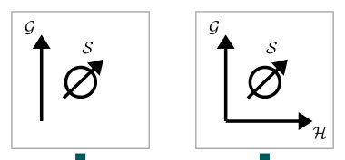
<figcaption class="paper-figure-caption"><b>Fig 1.</b> Figure 1. A spin-1/2 system S alongside a large spin system G yields a relational state approximately corresponding to a mixture, see Section II. Adding another large spin system H to the reference, yields a relational state which approaches an exact encoding of the qubit S as the quantum numbers of the reference grow, see Section III. Note that analogous states may be written for ρjSH. .</figcaption>
</figure>
<figure class="paper-figure-card">
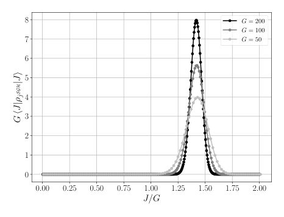
<figcaption class="paper-figure-caption"><b>Fig 2.</b> Figure 2. Total angular momentum probability densities of the SGH system for G = 50, 100, 200, as encoded by the den- sity matrix ρjSGH in (21). The peak occurs at J ≈ √</figcaption>
</figure>
<figure class="paper-figure-card">
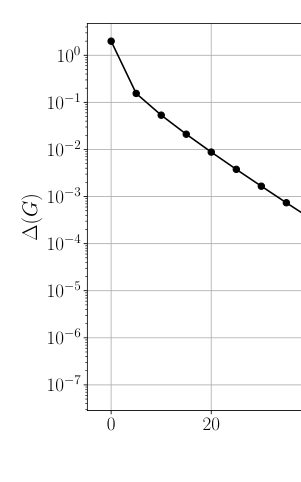
<figcaption class="paper-figure-caption"><b>Fig 3.</b> Figure 3. Numerical evaluation of ∆(G) = P</figcaption>
</figure>
</div>

<p><strong>Summary.</strong> The paper tackles the challenge of describing quantum spin without relying on an external classical reference frame. By coupling the target spin to two large auxiliary spins and employing group averaging techniques, the authors demonstrate that a complete, coherent description of the qubit state can be recovered in the appropriate large-limit regime.</p>
<p><strong>Why it may be interesting.</strong> This work addresses fundamental issues in quantum gravity and background independence by providing a concrete mathematical framework to define physical observables (like spin) purely relative to other quantum systems, which is crucial for theories where spacetime itself is quantized.</p>
<details>
<summary>Detailed structure</summary>
<p><strong>Main problem.</strong> The central problem is developing a description of quantum spin that is fully relational, meaning its state is independent of an externally fixed classical background reference frame.</p>
<p><strong>Main result.</strong> Using two large, orthogonal reference spins allows the relational encoding procedure to successfully recover the full coherence of the original pure qubit state in the limit of large reference angular momenta.</p>
<p><strong>Method.</strong> The authors employ group averaging techniques (both coherent and incoherent) on the joint density matrix of the target spin and the composite reference system over $SO(3)$ rotations.</p>
<p><strong>Model / system.</strong> The model involves a fundamental spin-1/2 system ($S$) coupled to two large quantum reference spins ($G$ and $H$). The analysis is performed using recoupling theory and group representation methods.</p>
<p><strong>Key observables.</strong> Coherence of the target spin state, the resulting density matrix $ ilde{E}(
ho_{SGH})$, and the total angular momentum probability distribution $\langle J|
ho_{jSGH}|J
angle$.</p>
<p><strong>Important parameters / regimes.</strong> The limit of large quantum numbers for the reference spins ($G 	o \infty$ and $H 	o \infty$).</p>
<p><strong>Assumptions / limitations.</strong> The analysis relies on comparing the results from coherent versus incoherent group averaging, with the conclusion favoring the coherent average for background independence.</p>
<p><strong>Figures summary.</strong> Figures illustrate the transition: a single reference spin yields only classical mixtures, while adding a second spin restores coherence. Other figures show convergence of probability distributions to specific asymptotic limits.</p>
<p><strong>Paper structure.</strong> The paper progresses by first analyzing the failure of a single reference spin (Poulin's idea), then introducing and calculating the result for two spins ($G$ and $H$), followed by a detailed comparison between coherent and incoherent averaging methods, and concluding with general statements on ideal encoding.</p>
</details>
<details>
<summary>Abstract</summary>
<p>The standard description of the state of a spin in quantum mechanics presupposes externally fixed directions -- a classical background. Can a spin be fully described instead in relation to other quantum mechanical systems? Poulin suggested twenty years ago group averaging over rotations the joint state of a fundamental spin and a reference spin with large angular momentum which, however, yields a classical bit in a probabilistic mixture. We revisit this idea and show that when the quantum reference system is augmented to \emph{two} large spins, the standard quantum mechanical description of a spin is recovered in the limit of large quantum numbers for the reference system.</p>
</details>
<p><sub><a href="#top">↑ back to top</a></sub></p>

<p><a id="paper-2606.15791"></a></p>
<h3 id="flowing-to-normality-and-the-fate-of-the-single-ring-theorem"><a href="http://arxiv.org/abs/2606.15791v1">Flowing to Normality and the Fate of the Single Ring Theorem</a></h3>
<p><strong>Authors:</strong> Joshua Feinberg, Roman Riser, Richard Scalettar, Anthony Zee<br>
<strong>Type:</strong> theory · <strong>Category:</strong> statistical mechanics · <strong>PDF:</strong> <a href="https://arxiv.org/pdf/2606.15791v1">https://arxiv.org/pdf/2606.15791v1</a><br>
<strong>Analysis basis:</strong> full PDF text, analyzed in chunks
<strong>Topic relevance:</strong> <code>driven-dissipative phase transition</code> <strong>1/5</strong> · <code>non-equilibrium universality</code> <strong>1/5</strong></p>
<div class="figure-strip-hint">↔ Scroll figures horizontally</div>
<div class="paper-figures-scroll">
<figure class="paper-figure-card">
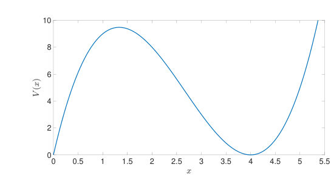
<figcaption class="paper-figure-caption"><b>Fig 1.</b> Figure 1. The cubic potential used in simulations V (x) = m2x + α</figcaption>
</figure>
<figure class="paper-figure-card">
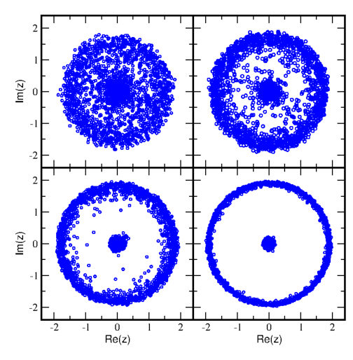
<figcaption class="paper-figure-caption"><b>Fig 2.</b> Figure 2. Evolution of the eigenvalue distribution in the com- plex plane for the cubic potential (7) with m2 = 16, α = −16, u = 3. Top, left: g = 0.0. Top, right: g = 0.0375. Bottom, left: g = 0.0625. Bottom, right: g = 0.125. Violation of the Single Ring Theorem is evident. These data suggest critical 0.0375 &lt; gcrit &lt; 0.0625. Matrix size N = 24.</figcaption>
</figure>
<figure class="paper-figure-card">
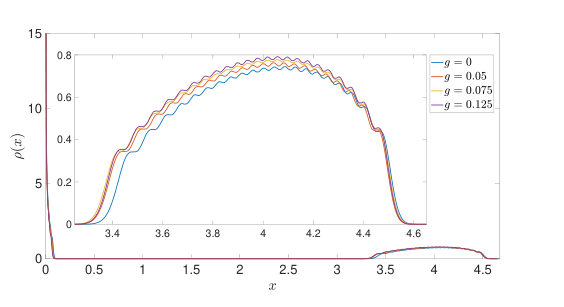
<figcaption class="paper-figure-caption"><b>Fig 3.</b> Figure 4. Density of squares singular values xi computed from (18) with the cubic potential V shown in Fig. 1 using Monte Carlo simulation for matrices of size N = 32 and for g value across the critical range. The singular values are clearly seen to condense in two disjoint segments. The inset magnifies the smaller density region around x = 4. The density oscilla- tions visible in the magnified inset are a typical finite-N effect. Notice that the density barely changes as g sweeps across the indicated range.</figcaption>
</figure>
<figure class="paper-figure-card">
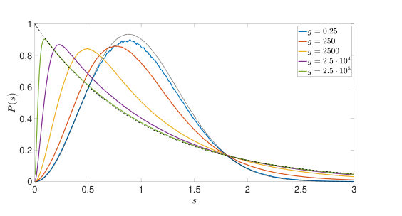
<figcaption class="paper-figure-caption"><b>Fig 4.</b> Figure 5. Unfolded spacing distribution of square singular val- ues for various magnitude of g showing transition for Wigner- Dyson (g = 0) towards Poisson statistics. Solid lines were obtained through Monte Carlo simulation with N = 32 sin- gular values subjected to the critical potential (see Fig. 1). Dashed line shows the exponential distribution e−s and the black dotted line represents Wigner-Dyson statistics for β = 2 in the limit N →∞. The spacing produced by the gap have been ignored, see explanation in the main text.</figcaption>
</figure>
<figure class="paper-figure-card">
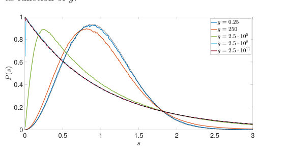
<figcaption class="paper-figure-caption"><b>Fig 5.</b> Figure 6. Similar plots as in Fig. 5 for the Ginibre potential V (x) = x and for a larger range of g values.</figcaption>
</figure>
</div>

<p><strong>Summary.</strong> This work analyzes a non-Hermitian random matrix ensemble undergoing a controlled flow towards normality by introducing a penalty term. It finds that the Single Ring Theorem breaks down at a small critical coupling $g_{crit}$. Furthermore, it demonstrates a universal crossover in the statistics of singular values from Wigner-Dyson repulsion to Poissonian behavior as the system approaches the normal limit.</p>
<p><strong>Why it may be interesting.</strong> The study provides a concrete, mathematically rigorous example of how spectral rigidity (Wigner-Dyson) can smoothly transition to uncorrelated behavior (Poissonian) through tuning a system parameter, linking random matrix theory to fundamental statistical transitions.</p>
<details>
<summary>Detailed structure</summary>
<p><strong>Main problem.</strong> The paper investigates the transition of eigenvalue statistics from those obeying the Single Ring Theorem (SRT) in non-Hermitian random matrix ensembles to those violating it as the ensemble flows towards normal matrices.</p>
<p><strong>Main result.</strong> The SRT breaks down at a small critical coupling constant ($g_{crit} \approx 0.055$), and the statistics of singular values continuously transition from Wigner-Dyson repulsion (low $g$) to Poissonian behavior (high $g$).</p>
<p><strong>Method.</strong> The analysis combines analytical derivations for joint probability distributions with extensive numerical simulations, particularly focusing on finite-size scaling techniques.</p>
<p><strong>Model / system.</strong> The model is a random non-Hermitian matrix ensemble governed by a potential and a penalty term proportional to the commutator squared ($    ext{Tr}[\phi, \phi^\dagger]^2$). The singular values are treated as a Fermi gas confined to the positive half-line.</p>
<p><strong>Key observables.</strong> Average density of complex eigenvalues, interparticle spacing statistics (Wigner-Dyson vs. Poissonian), and the critical coupling constant $g_{crit}$.</p>
<p><strong>Important parameters / regimes.</strong> The flow parameter $g$, the matrix size $N$, and the potential parameters ($V(x)$).</p>
<p><strong>Assumptions / limitations.</strong> The analysis assumes the large-$N$ limit for spectral theorems, and that the crossover in spacing statistics is distinct from the physical breaking of the SRT.</p>
<p><strong>Figures summary.</strong> Figures show the evolution of eigenvalue density violating the SRT as $g$ increases, and plots demonstrate the continuous crossover of singular value spacing statistics from Wigner-Dyson to Poissonian behavior.</p>
<p><strong>Paper structure.</strong> The paper first introduces the model and the concept of the flow parameter $g$. It then numerically determines the critical point for SRT breakdown. Subsequently, it analyzes the singular value gas dynamics, deriving the JPDF and showing the crossover in spacing statistics using fermion analogies on the half-line.</p>
</details>
<details>
<summary>Abstract</summary>
<p>Random non-hermitian matrix ensembles with double-sided rotation invariance obey, in the limit of large matrix size, the Single Ring Theorem, which states that the support of the mean eigenvalue distribution in the complex plane is either a disk or an annulus. In contrast, rotational-invariant random normal matrix ensembles can have mean eigenvalue densities supported over any number of concentric annuli in the complex plane. In this paper we introduce and investigate, both analytically and numerically, a non-hermitian matrix model which flows from a generic matrix distribution obeying the Single Ring Theorem to a distribution of normal matrices by tuning a parameter which penalizes non-normality.   We observe numerically breakdown of the Single Ring Theorem as the model flows towards normality, and determine the critical value of the parameter at which the transition occurs. We also study in detail the behavior of the singular values of these matrices under the flow. These singular values form a Fermi gas confined to the positive half-line. In particular, we find that at small values of the flow parameter, the interparticle spacings in the gas exhibit Wigner-Dyson repulsion, whereas for asymptotically large values of the flow parameter, at the normal matrix endpoint of the flow, the spacing statistics is Poissonian. The flow interpolates continuously between these two types of statistics. However, this change in statistics is not related directly to breaking of the Single Ring Theorem, which occurs very early-on along the flow, in the regime of Wigner-Dyson statistics. Finally, we introduce a certain ensemble of random permutations associated with the gas, and make a conjecture on how to use it in order to reconstruct approximately the average density of complex eigenvalues from that of the singular values in the large-$N$ limit.</p>
</details>
<p><sub><a href="#top">↑ back to top</a></sub></p>

<p><a id="paper-2606.16260"></a></p>
<h3 id="tuning-superconductivity-and-charge-density-wave-order-by-next-nearest-neighbor-hopping-integral-in-honeycomb-holstein-model"><a href="http://arxiv.org/abs/2606.16260v1">Tuning superconductivity and charge density wave order by next-nearest-neighbor hopping integral in honeycomb Holstein model</a></h3>
<p><strong>Authors:</strong> Hongxing Liu, Lufeng Zhang, Tianxing Ma<br>
<strong>Type:</strong> theory · <strong>Category:</strong> strongly correlated electrons · <strong>PDF:</strong> <a href="https://arxiv.org/pdf/2606.16260v1">https://arxiv.org/pdf/2606.16260v1</a><br>
<strong>Analysis basis:</strong> full PDF text, analyzed in chunks
<strong>Topic relevance:</strong> <code>Keldysh / 2PI / non-Gaussian methods</code> <strong>1/5</strong> · <code>analog quantum simulation</code> <strong>1/5</strong></p>
<div class="figure-strip-hint">↔ Scroll figures horizontally</div>
<div class="paper-figures-scroll">
<figure class="paper-figure-card">
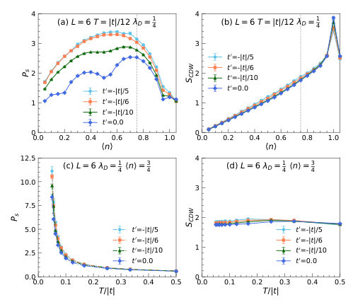
<figcaption class="paper-figure-caption"><b>Fig 1.</b> FIG. 1: Pairing susceptibility Ps as a function of (a) density ⟨n⟩and (c) temperature T/|t| for different t′ at L = 6 and λD = 1/4. The CDW structure SCDW as (b) a function of density ⟨n⟩and (d) temperature T/|t| for different t′ at L = 6 and λD = 1/4. The gray dashed lines in (a) and (b) mark the vHS filling at ⟨n⟩= 3/4.</figcaption>
</figure>
<figure class="paper-figure-card">
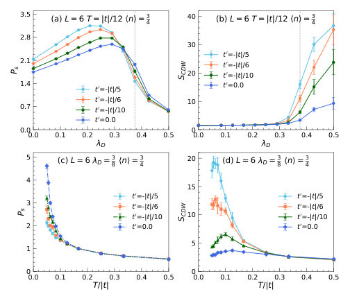
<figcaption class="paper-figure-caption"><b>Fig 2.</b> FIG. 2: Pairing susceptibility Ps as a function of (a) λD and (c) temperature T/|t| for different t′ at L = 6,⟨n⟩= 3/4. The CDW structure SCDW as a function of (b) λD and (d) temperature T/|t| for different t′ at L = 6,⟨n⟩= 3/4. The gray dashed lines in (a) and (b) mark EPC strength λD = 3/8.</figcaption>
</figure>
<figure class="paper-figure-card">
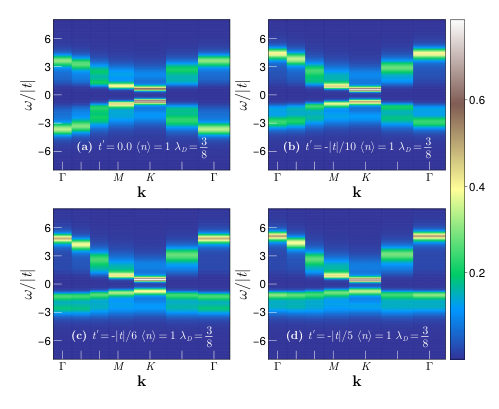
<figcaption class="paper-figure-caption"><b>Fig 3.</b> FIG. 3: Spectral function A(k,ω) as a function of electron wave vector k and real frequency ω at ⟨n⟩= 1, λD = 3/8, T = |t|/8, where t′ = 0.0, −|t|/10, −|t|/6, −|t|/5 corresponding to (a)–(d) respectively, characterized by a heat map.</figcaption>
</figure>
<figure class="paper-figure-card">
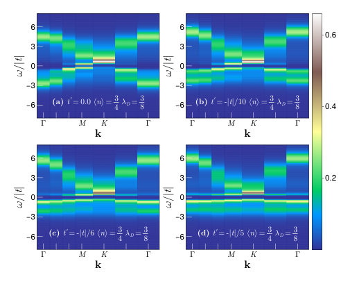
<figcaption class="paper-figure-caption"><b>Fig 4.</b> FIG. 5: Spectral function A(k,ω) as a function of electron wave vector k and real frequency ω at fixed ⟨n⟩= 3/4, λD = 3/8, T = |t|/20, where t′ = 0.0, −|t|/10, −|t|/6, −|t|/5 corresponding to (a)–(d) respectively, characterized by a heatmap.</figcaption>
</figure>
<figure class="paper-figure-card">
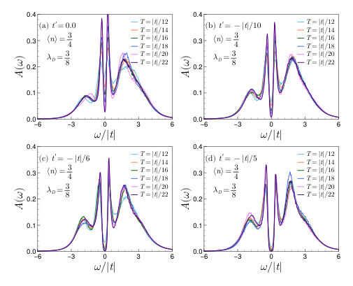
<figcaption class="paper-figure-caption"><b>Fig 5.</b> FIG. 6: Spectral function A(ω) as a function of temperature T in a honeycomb lattice at the saddle point M, fixed ⟨n⟩= 3/4, λD = 3/8 where t′ = 0.0, −|t|/10, −|t|/6, −|t|/5 corresponding to (a)–(d), respectively.</figcaption>
</figure>
</div>

<p><strong>Summary.</strong> The paper uses advanced quantum Monte Carlo simulations on the Holstein model to study how next-nearest-neighbor hopping ($t'$) tunes the competition between superconducting and charge density wave orders. It demonstrates that $t'$ acts as a critical knob, shifting the ground state preference from superconductivity to CDW depending on the coupling strength and electron filling. This provides theoretical insight into phonon-mediated pairing mechanisms in correlated lattices.</p>
<p><strong>Why it may be interesting.</strong> This work models phonon-mediated interactions in a correlated electronic setting, which is highly relevant to understanding unconventional superconductivity mechanisms often found in strongly correlated materials.</p>
<details>
<summary>Detailed structure</summary>
<p><strong>Main problem.</strong> The study investigates the complex interplay and competition between superconductivity (SC) and charge density wave (CDW) order in a lattice model.</p>
<p><strong>Main result.</strong> A finite negative next-nearest-neighbor hopping integral ($t'$) can tune this competition: enhancing SC near van Hove fillings in weak coupling, but promoting CDW at intermediate coupling strengths.</p>
<p><strong>Method.</strong> The research employs unbiased determinant quantum Monte Carlo (DQMC) simulations combined with differential evolution analytic continuation (DEAC) to analyze spectral properties.</p>
<p><strong>Model / system.</strong> The system is modeled by the Holstein model on a honeycomb lattice, which includes nearest-neighbor hopping ($t$), next-nearest-neighbor hopping ($t'$), and electron-phonon coupling ($g$).</p>
<p><strong>Key observables.</strong> Superconducting pairing susceptibility ($  ext{Ps}$), CDW structure factor ($ ext{SCDW}$), and the single-particle spectral function $A(\mathbf{k}, \omega)$ showing gap opening.</p>
<p><strong>Important parameters / regimes.</strong> The key tunable parameters are the NNN hopping integral ($t'$), the electron-phonon coupling strength ($\lambda_D$), and the electron filling ($\langle n 
angle$), especially near van Hove singularities.</p>
<p><strong>Assumptions / limitations.</strong> The analysis relies on DQMC simulations, which are computationally intensive, and DEAC for spectral reconstruction; results focus on robust trends rather than precise critical exponents.</p>
<p><strong>Figures summary.</strong> Figures illustrate how $   ext{Ps}$ and $  ext{SCDW}$ change as a function of electron density ($\langle n 
angle$) or coupling strength ($\lambda_D$), clearly showing the crossover between SC dominance and CDW dominance controlled by $t'$.</p>
<p><strong>Paper structure.</strong> The paper systematically analyzes the system's behavior across different regimes: weak, intermediate, and strong electron-phonon coupling strengths, contrasting the effects of $t'$ at specific fillings like half-filling versus van Hove fillings.</p>
</details>
<details>
<summary>Abstract</summary>
<p>By using unbiased determinant quantum Monte Carlo simulations, we investigate the interplay between superconductivity and charge density wave order in the Holstein model on a honeycomb lattice with next-nearest-neighbor hopping \(t^{\prime}\).   We find that a finite negative \(t^{\prime}\) enhances \(s\)-wave superconducting pairing susceptibility near the van Hove fillings in the weak electron-phonon coupling regime, while it suppresses superconductivity and promotes charge density wave order at intermediate electron-phonon coupling strengths.   The effect of \(t^{\prime}\) on a charge density wave is filling-dependent: It suppresses the charge density wave at half filling but enhances it near the van Hove singularities.   A spectral analysis reveals the opening of a gap at low temperatures, highlighting the competitive relationship between superconducting and charge density wave orders mediated by electron-phonon coupling and tuned by \(t^{\prime}\).</p>
</details>
<p><sub><a href="#top">↑ back to top</a></sub></p>

<p><a id="paper-2606.16945"></a></p>
<h3 id="counterdiabatic-raman-atom-optics-for-compact-high-sensitivity-gravimetry"><a href="http://arxiv.org/abs/2606.16945v1">Counterdiabatic Raman Atom Optics for Compact High-Sensitivity Gravimetry</a></h3>
<p><strong>Authors:</strong> Asad Ali, Hamid Arian Zad, Saif Al-Kuwari, Muhammad Irtiza Hussain, Muhammad Talha Rahim, Hashir Kuniyil, Tim Byrnes, James Q. Quach, Saeed Haddadi<br>
<strong>Type:</strong> theory · <strong>Category:</strong> other · <strong>PDF:</strong> <a href="https://arxiv.org/pdf/2606.16945v1">https://arxiv.org/pdf/2606.16945v1</a><br>
<strong>Analysis basis:</strong> full PDF text, analyzed in chunks
<strong>Topic relevance:</strong> <code>interference shaping light</code> <strong>1/5</strong></p>
<div class="figure-strip-hint">↔ Scroll figures horizontally</div>
<div class="paper-figures-scroll">
<figure class="paper-figure-card">
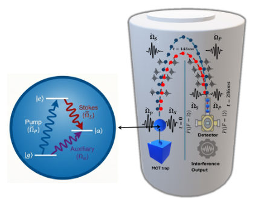
<figcaption class="paper-figure-caption"><b>Fig 1.</b> FIG. 1. Conceptual schematic of the STIRSAP-driven large- momentum-transfer atom interferometer. Three Raman in- teraction zones at t = 0, T, and 2T implement the Mach– Zehnder π/2–π–π/2 sequence using counterintuitive STIR- SAP pulse pairs coupling |g⟩and |a⟩through the off-resonant excited state |e⟩. Sequential Raman π pulses symmetrically accelerate and decelerate the interferometer arms, generat- ing a momentum splitting 2nℏkeff. The atomic ensemble is initially prepared in a magneto-optical trap (MOT), which provides a source of ultracold atoms for the interferometric sequence.</figcaption>
</figure>
<figure class="paper-figure-card">
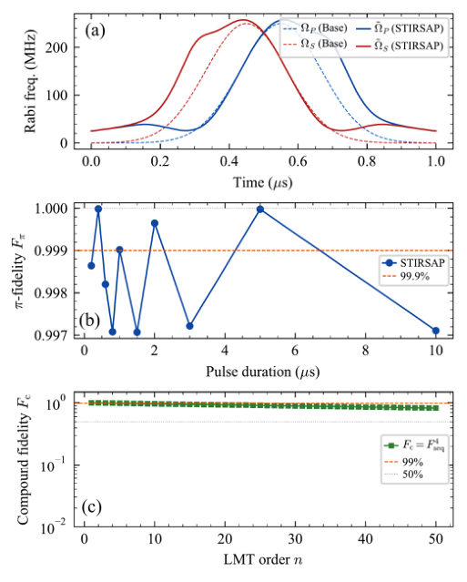
<figcaption class="paper-figure-caption"><b>Fig 2.</b> FIG. 2. Single-pulse STIRSAP performance. (a) Compari- son between the original Gaussian STIRAP Raman envelopes (dashed) and the reconstructed STIRSAP Raman envelopes (solid) for Tp = 1 µs. (b) Raman π-pulse fidelity Fπ ver- sus pulse duration. High-fidelity transfer persists throughout the ultrafast regime, although the oscillatory structure indi- cates sensitivity to the detailed pulse dynamics. (c) Com- pound interferometer fidelity Fc = F 4(n−1) π versus LMT order n. The exponential accumulation of pulse-transfer errors pro- gressively reduces the achievable interferometer contrast at high momentum order.</figcaption>
</figure>
<figure class="paper-figure-card">

<figcaption class="paper-figure-caption"><b>Fig 3.</b> Figure 2(a) compares the original Gaussian STI- RAP envelopes with the reconstructed STIRSAP Ra- man pulses for Tp = 1 µs. The superadiabatic correction substantially reshapes the pulse sequence near the pulse overlap region, where the counterdiabatic contribution is largest. The achieved fidelity indicates that superadiabatic Ra- man shaping can suppress nonadiabatic transfer errors even in the ultrafast pulse regime. However, the present simulations do not establish superiority relative to op- timized composite-pulse or optimal-control Raman tech- niques, several of which have reported fidelities approach- ing or exceeding 99.99% under experimentally optimized conditions [18–20]. A direct...</figcaption>
</figure>
<figure class="paper-figure-card">
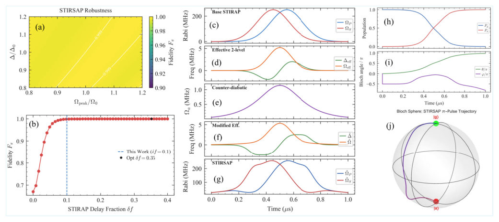
<figcaption class="paper-figure-caption"><b>Fig 4.</b> FIG. 3. STIRSAP pulse construction and single-pulse characterization. (a) Robustness map of the transfer fidelity Fπ under simultaneous variations of the peak Raman coupling and single-photon detuning. High fidelity is maintained primarily along correlated variations preserving the ratio Ω2 peak/∆. (b) Transfer fidelity versus relative pulse delay. The operational point used throughout this work (δf = 0.1) lies within a broad high-fidelity plateau. (c) Base Gaussian STIRAP Raman envelopes. (d) Effective Raman coupling and detuning obtained after adiabatic elimination. (e) Counterdiabatic auxiliary coupling Ωa(t). (f) Modified superadiabatic effective parameters (e∆, eΩ). (g) Final...</figcaption>
</figure>
<figure class="paper-figure-card">
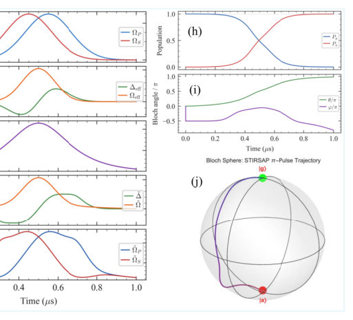
<figcaption class="paper-figure-caption"><b>Fig 5.</b> Figure 4(a) illustrates the classical space–time tra- jectories corresponding to the numerically optimal momentum-transfer order n = 270. The sequential STIR- SAP Raman pulses symmetrically accelerate and deceler- ate the two interferometer arms, generating a maximum momentum splitting of 2nℏkeff while preserving the stan- dard Mach–Zehnder geometry. The resulting trajectories remain mirror symmetric about the central π-pulse, en- suring recombination of the two wave packets at the fi- nal beam splitter despite the large momentum separa- tion accumulated during the sequence. The principal consequence of increasing the LMT order is the rapid growth of the spatial separation between the...</figcaption>
</figure>
</div>

<p><strong>Summary.</strong> The paper theoretically investigates using Stimulated Raman Shortcut-to-Adiabatic Passage (STIRSAP) to achieve ultra-high fidelity population transfer necessary for large-momentum-transfer atom interferometry. By optimizing the pulse control, they predict that sensitivity improves significantly with increasing momentum order ($n$), reaching an optimum near $n=270$. However, the analysis concludes that practical measurements will be limited by external technical noise sources rather than the fundamental limitations of the quantum control protocol itself.</p>
<p><strong>Why it may be interesting.</strong> This work is highly relevant as it combines advanced quantum control techniques (STIRAP/CD correction) with precision measurement physics. The theoretical framework for mitigating decoherence in high-order interferometers using tailored light pulses is a key area of research in AMO and quantum optics.</p>
<details>
<summary>Detailed structure</summary>
<p><strong>Main problem.</strong> To enhance the inertial sensitivity of compact quantum sensors using Large-Momentum-Transfer (LMT) atom interferometry, which is fundamentally limited by pulse-transfer errors across long Raman sequences.</p>
<p><strong>Main result.</strong> Superadiabatic Raman control via STIRSAP pulses achieves high single-pulse fidelities ($F_\pi \approx 0.999$) while allowing the interferometer to reach an optimal order ($n\approx270$), though technical noise limits practical performance.</p>
<p><strong>Method.</strong> The study uses theoretical modeling of Stimulated Raman Shortcut-to-Adiabatic Passage (STIRSAP) and analyzes the scaling behavior of compound interferometric fidelity versus LMT order ($n$).</p>
<p><strong>Model / system.</strong> The system is based on cold atoms, specifically using a Mach–Zehnder atom interferometer geometry with $^{87}	ext{Rb}$ atoms. The dynamics are modeled by an effective two-level Raman Hamiltonian derived from the full three-level interaction.</p>
<p><strong>Key observables.</strong> Single-pulse transfer fidelity ($F_\pi$), interferometric phase enhancement ($\Delta\Phi \propto n k_{	ext{eff}} g T^2$), and the resulting acceleration sensitivity ($\delta g$).</p>
<p><strong>Important parameters / regimes.</strong> LMT order ($n$), pulse duration ($T_p = 1 \mu	ext{s}$), and the optimal order $n_{	ext{opt}} \approx 270$.</p>
<p><strong>Assumptions / limitations.</strong> The analysis relies on an effective two-level Raman description, neglecting full three-level effects like spontaneous emission; it also assumes that technical noise sources (vibration) will dominate over quantum shot noise at practical orders.</p>
<p><strong>Figures summary.</strong> Figures illustrate the STIRSAP pulse sequence ($\pi/2-\pi-\pi/2$), show the evolution of fidelity ($F_\pi$) vs. pulse duration, and plot sensitivity ($\delta g$) versus LMT order ($n$), highlighting the competition between phase enhancement and contrast decay.</p>
<p><strong>Paper structure.</strong> The paper first establishes the need for high-fidelity control in LMT interferometry using STIRSAP theory (incorporating counterdiabatic corrections). It then analyzes the scaling of sensitivity with $n$, identifying an optimal order, before concluding that technical noise limits performance rather than fundamental pulse limitations.</p>
</details>
<details>
<summary>Abstract</summary>
<p>Large-momentum-transfer (LMT) atom interferometry provides a route toward enhanced inertial sensitivity in compact quantum sensors, but its scalability is limited by the accumulation of pulse-transfer errors across long Raman pulse sequences. We investigate theoretically the use of stimulated Raman shortcut-to-adiabatic passage (STIRSAP) for high-fidelity LMT atom optics in a Mach--Zehnder interferometer geometry. The counterdiabatic correction is encoded directly into the Raman pulse envelopes, eliminating the need for auxiliary microwave or radio-frequency control fields. Numerical simulations based on an effective Raman model show that $1~μ\mathrm{s}$ STIRSAP pulses achieve single-pulse transfer fidelities of $F_π= 0.99902$ while maintaining negligible pulse-time overhead even at high momentum order. We analyze the resulting tradeoff between interferometric phase enhancement and compound contrast decay and identify an unconstrained shot-noise optimum near $n\approx270$. The analysis further shows that practical operation at extreme LMT order is constrained by wave-packet separation, vibration noise, Doppler detuning, and accumulated systematic effects rather than by pulse duration itself. These results establish superadiabatic Raman control as a promising approach for scalable high-fidelity atom optics and clarify the physical limitations governing compact high-order atom interferometers.</p>
</details>
<p><sub><a href="#top">↑ back to top</a></sub></p>

<p><a id="paper-2606.15697"></a></p>
<h3 id="coupled-cluster-study-of-dynamic-jahn-teller-effect-in-a-math1574math-w-antifluorite"><a href="http://arxiv.org/abs/2606.15697v1">Coupled-cluster study of dynamic Jahn-Teller effect in a $5d^2$ W antifluorite</a></h3>
<p><strong>Authors:</strong> Teruki Matsuzaki, Liviu F. Chibotaru, Maristella Alessio, Naoya Iwahara<br>
<strong>Type:</strong> theory · <strong>Category:</strong> strongly correlated electrons · <strong>PDF:</strong> <a href="https://arxiv.org/pdf/2606.15697v1">https://arxiv.org/pdf/2606.15697v1</a><br>
<strong>Analysis basis:</strong> full PDF text, analyzed in chunks
<strong>Topic relevance:</strong> <code>Keldysh / 2PI / non-Gaussian methods</code> <strong>1/5</strong></p>
<div class="figure-strip-hint">↔ Scroll figures horizontally</div>
<div class="paper-figures-scroll">
<figure class="paper-figure-card">
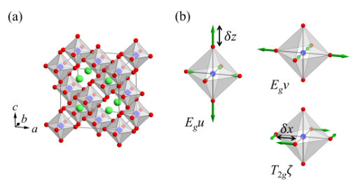
<figcaption class="paper-figure-caption"><b>Fig 1.</b> FIG. 1. (a) The conventional unit cell of antifluorite and (b) the JT active normal modes of the 5d2 octahedron. The green, blue, and red spheres represent the Cs, W, and Cl atoms, respectively. (b) The green arrows indicate the displacements of the atoms by the JT active normal modes.</figcaption>
</figure>
<figure class="paper-figure-card">
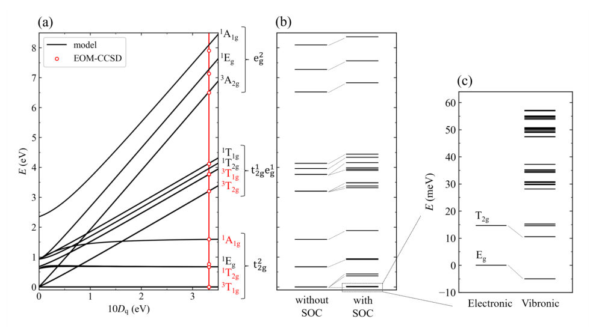
<figcaption class="paper-figure-caption"><b>Fig 2.</b> FIG. 2. Energy levels of embedded 5d2 sites with respect to the ground energy level (in eV). (a) Tanabe-Sugano diagram. The black lines are the prediction by the Tanabe-Sugano diagram (B = 0.045 eV, C = 0.193 eV), and the red open circles and red solid lines indicate the ab initio levels and 10Dq, respectively. (b) Comparison between the term levels (left) and spin-orbit multiplet states (right) obtained using the fitted data. We set the ground-state energy to zero. (c) Low-lying Jeff = 2 crystal-field levels (left) and the vibronic levels (right).</figcaption>
</figure>
<figure class="paper-figure-card">
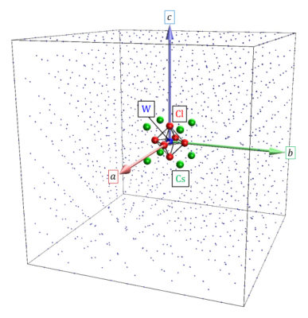
<figcaption class="paper-figure-caption"><b>Fig 3.</b> FIG. 3. The tungsten cluster (WCl6 and the nearest eight Ba ions) is embedded in point charges. The quantum-mechanical cluster is cut out from the crystallographic structure [84]. The blue dots represent the point charges.</figcaption>
</figure>
<figure class="paper-figure-card">
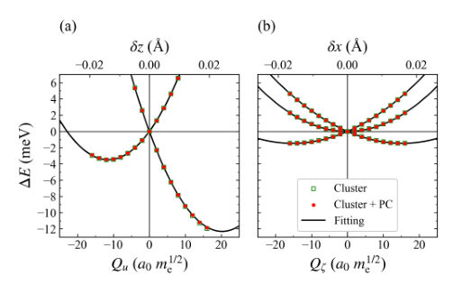
<figcaption class="paper-figure-caption"><b>Fig 4.</b> FIG. 4. The 3T1g APESs with respect to (a) the Egu and (b) the T2gζ deformations. The green open squares and the red circles are the EOM-CCSD data without and with point charges, respectively. The black lines are the model fit to the EOM-CCSD data with point charges.</figcaption>
</figure>
<figure class="paper-figure-card">
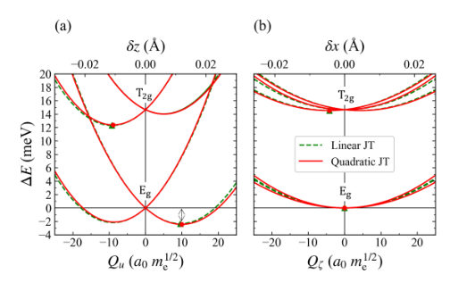
<figcaption class="paper-figure-caption"><b>Fig 5.</b> FIG. 5. The Jeff = 2 APESs with respect to (a) the Egu and (b) the T2gζ deformations. The green dashed and the red solid lines show the APESs of the models that include only linear vibronic coupling and include both linear and quadratic vibronic couplings, respectively.</figcaption>
</figure>
</div>

<p><strong>Summary.</strong> This study uses EOM-CC theory to investigate the dynamic Jahn-Teller effect in $   ext{Cs}_2   ext{WCl}_6$, a $5d^2$ antifluorite. By calculating RIXS spectra and magnetic moments, the authors show that while the static JT effect is weak, the dynamic coupling significantly modifies spectroscopic features. This confirms the utility of EOM-CC for modeling complex coupled phenomena in correlated insulators.</p>
<p><strong>Why it may be interesting.</strong> The work provides a detailed theoretical framework linking advanced quantum chemistry methods (EOM-CC) directly to measurable solid-state properties like RIXS spectra, which is crucial for understanding coupled electronic/lattice dynamics in strongly correlated $5d$ systems.</p>
<details>
<summary>Detailed structure</summary>
<p><strong>Main problem.</strong> To quantitatively unravel the nature of $5d^2$ centers and study the complex interplay among charge, spin, orbital, and lattice degrees of freedom in correlated insulators.</p>
<p><strong>Main result.</strong> The Jahn-Teller effect is found to be in a weak regime, but the dynamic Jahn-Teller (DJT) effect significantly modulates RIXS spectra shapes and affects the magnetic moment. The EOM-CC method proves useful for predicting these phenomena.</p>
<p><strong>Method.</strong> Equation-of-Motion Coupled Cluster (EOM-CC) theory is applied to derive electronic and vibronic model Hamiltonians, followed by calculating W $L_3$ edge Resonant Inelastic X-ray Scattering (RIXS) spectra and the effective magnetic moment.</p>
<p><strong>Model / system.</strong> The system studied is $ ext{Cs}_2   ext{WCl}_6$, a cubic $5d^2$ double perovskite. The model incorporates electronic Coulomb, Spin-Orbit Coupling ($\hat{H}_{	ext{SO}}$), and Ligand-Field Hamiltonians, coupled to the lattice vibrations via the DJT Hamiltonian.</p>
<p><strong>Key observables.</strong> W $L_3$ edge RIXS spectra (electronic vs. vibronic), effective magnetic moment ($M_{	ext{eff}}$) temperature dependence, and Jahn-Teller stabilization energies ($ ext{E}<em 2g>g$ vs $  ext{T}</em>$).</p>
<p><strong>Important parameters / regimes.</strong> The system operates in a weak JT regime; key parameters include $10Dq = 3.32 	ext{ eV}$ and calculated vibronic coupling constants.</p>
<p><strong>Assumptions / limitations.</strong> The primary approximations involve the use of EOM-CC theory, treating the environment via point charges (Mulliken charges), and neglecting intersite interactions.</p>
<p><strong>Figures summary.</strong> Figures illustrate the conventional unit cell and JT active modes; APESs show energy level splitting due to $E_g$ and $T_{2g}$ deformations; RIXS spectra compare electronic vs. vibronic features at different temperatures; a graph shows the temperature dependence of $M_{	ext{eff}}$ matching experiment.</p>
<p><strong>Paper structure.</strong> The paper develops the theoretical framework by defining the full Hamiltonian, calculating necessary parameters (e.g., using EOM-CCSD for APESs), and then applying the DJT model to predict spectroscopic signatures (RIXS) and magnetic behavior ($M_{	ext{eff}}$).</p>
</details>
<details>
<summary>Abstract</summary>
<p>In correlated insulators, the interplay among coexisting charge, spin, orbital, and lattice degrees of freedom gives rise to rich quantum phenomena, while unraveling the interplay is not straightforward. In the family of cubic $5d^2$ double perovskites, the ground spin-orbit coupled electronic states of $5d$ metal sites are degenerate and couple to the Jahn-Teller active vibrations, whereas no experimental evidence of the symmetry-lowering in the low-temperature ordered phases has been reported. To quantitatively unravel the nature of $5d^2$ centers, we apply equation-of-motion coupled cluster (EOM-CC) theory to analyze the vibronic and magnetic properties of $5d^2$ W sites of Cs$_2$WCl$_6$. We derive the electronic and vibronic model Hamiltonians, calculate the W $L_3$ edge resonant inelastic x-ray scattering (RIXS) spectra, and determine the effective magnetic moment. The simulated RIXS spectra show that vibronic coupling makes several peaks asymmetric. The effective magnetic moments exhibit a temperature dependence similar to that observed experimentally, confirming the validity of the calculated distribution of low-energy levels. Our calculations indicate that the Jahn-Teller effect in Cs$_2$WCl$_6$ is in a weak regime, and noticeable deformation would not occur, whereas the dynamic Jahn-Teller effect modulates the shapes of the RIXS spectra and affects the magnetic moment. This work demonstrates the usefulness of the EOM-CC method for predicting physical phenomena on metal sites in correlated insulating materials.</p>
</details>
<p><sub><a href="#top">↑ back to top</a></sub></p>

<p><a id="paper-2606.15558"></a></p>
<h3 id="degeneracy-cannot-violate-the-quantum-hamming-bound"><a href="http://arxiv.org/abs/2606.15558v1">Degeneracy Cannot Violate the Quantum Hamming Bound</a></h3>
<p><strong>Authors:</strong> Yu-Xuan Zhang, Jing-Ling Chen<br>
<strong>Type:</strong> theory · <strong>Category:</strong> quantum information and computing · <strong>PDF:</strong> <a href="https://arxiv.org/pdf/2606.15558v1">https://arxiv.org/pdf/2606.15558v1</a><br>
<strong>Analysis basis:</strong> full PDF text, analyzed in chunks
<strong>Topic relevance:</strong> <code>entanglement &amp; information structure</code> <strong>1/5</strong></p>
<div class="figure-strip-hint">↔ Scroll figures horizontally</div>
<div class="paper-figures-scroll">
<figure class="paper-figure-card">
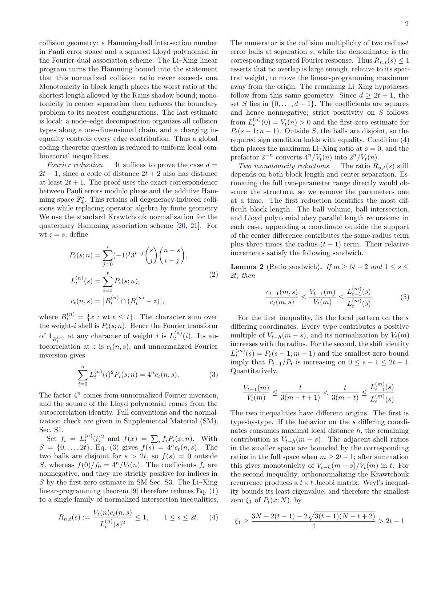
<figcaption class="paper-figure-caption"><b>Fig 1.</b> Low-resolution page preview, page 2</figcaption>
</figure>
<figure class="paper-figure-card">
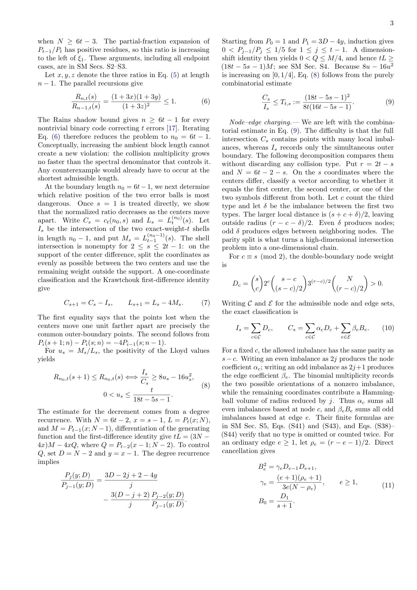
<figcaption class="paper-figure-caption"><b>Fig 2.</b> Low-resolution page preview, page 3</figcaption>
</figure>
<figure class="paper-figure-card">
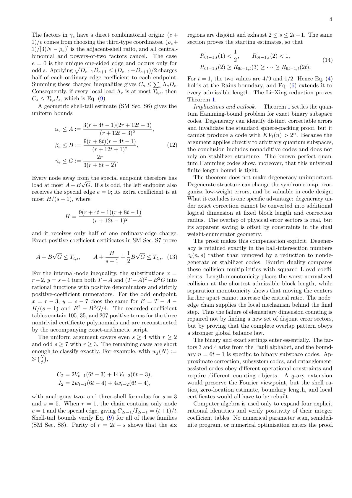
<figcaption class="paper-figure-caption"><b>Fig 3.</b> Low-resolution page preview, page 4</figcaption>
</figure>
<figure class="paper-figure-card">
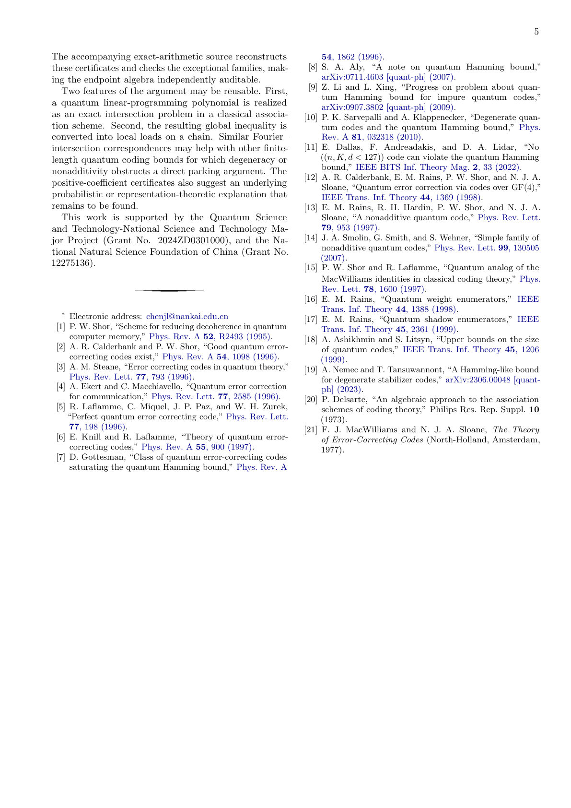
<figcaption class="paper-figure-caption"><b>Fig 4.</b> Low-resolution page preview, page 5</figcaption>
</figure>
<figure class="paper-figure-card">
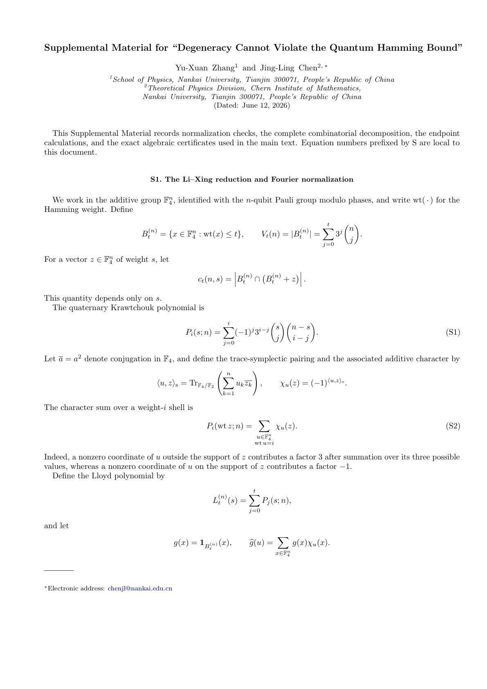
<figcaption class="paper-figure-caption"><b>Fig 5.</b> Low-resolution page preview, page 6</figcaption>
</figure>
</div>

<p><strong>Summary.</strong> This paper resolves a decades-old question in quantum coding theory: whether code degeneracy can violate the Quantum Hamming Bound. The authors prove that despite complex error overlaps allowed by degeneracy, the bound remains inviolable for all exact binary quantum subspace codes. They achieve this using sophisticated combinatorial methods involving transforming linear programming bounds into local node-edge charging inequalities.</p>
<p><strong>Why it may be interesting.</strong> This work provides deep mathematical insight into the fundamental limits of quantum error correction codes, which underpins all practical quantum computing architectures. It settles a long-standing open problem by providing rigorous combinatorial proofs applicable to general subspace codes, not just stabilizer codes.</p>
<details>
<summary>Detailed structure</summary>
<p><strong>Main problem.</strong> To rigorously prove that quantum error-correcting codes, even those exhibiting degeneracy (where distinct errors act identically), cannot violate the fundamental Quantum Hamming Bound.</p>
<p><strong>Main result.</strong> The authors prove that every exact binary quantum subspace code with more than one logical qubit ($K>1$) must satisfy the established Quantum Hamming Bound. Degeneracy allows error sectors to overlap but does not permit an enlargement of this finite-length bound.</p>
<p><strong>Method.</strong> The proof combines advanced combinatorial techniques, transforming a linear programming problem into an exact intersection count for quaternary Hamming balls. This is reduced via monotonicity arguments to analyzing local node-edge charging inequalities at the shortest admissible code length.</p>
<p><strong>Model / system.</strong> The analysis focuses on abstract mathematical structures: exact binary quantum subspace codes $((n, K, d))$ designed to correct Pauli errors up to a certain weight $t$. The underlying mathematics involves Fourier transforms and counting vectors in Hamming spaces over $\mathbb{F}_2^n$.</p>
<p><strong>Key observables.</strong> The normalized collision ratio $R_{n,t}(s)$, which must be less than or equal to 1 for the bound to hold. Other key observables include collision multiplicities ($C_s, I_s$) and related ratios ($u_s$).</p>
<p><strong>Important parameters / regimes.</strong> Block length $n$, code dimension factor $K$, error correction radius $t = \lfloor(d-1)/2
floor$, and the support size $s$ used in local analysis.</p>
<p><strong>Assumptions / limitations.</strong> The proof assumes the existence of an exact binary quantum subspace code structure. The final steps rely on complex combinatorial identities derived from orthogonal polynomials (Krawtchouk polynomials) to establish positivity and inequality chains.</p>
<p><strong>Figures summary.</strong> Not specified, but the notes detail the derivation of recurrence relations for collision multiplicities ($C_{s+1} = C_s - I_s$) and the establishment of bounds using polynomial inequalities.</p>
<p><strong>Paper structure.</strong> The paper proceeds by first establishing the connection to linear programming bounds (Li-Xing). It then uses Fourier reduction to map the problem onto additive Hamming space structures. The core is a multi-stage combinatorial proof: reducing the global bound to local node-edge charging inequalities, and finally deriving explicit polynomial certificates that confirm these local constraints are satisfied.</p>
</details>
<details>
<summary>Abstract</summary>
<p>The quantum Hamming bound is the standard finite-length sphere-packing bound for exact correction of arbitrary qubit errors. Whether degeneracy can evade this bound has remained unresolved in full generality for nearly three decades: distinct correctable errors may act identically on the code space, so the usual disjoint-sphere argument breaks down. We prove that every exact binary quantum subspace code with $K>1$ obeys the bound, without assuming either nondegeneracy or additivity. Our proof turns the Li--Xing linear-programming polynomial into an exact intersection count for quaternary Hamming balls. Monotonicity in block length and in ball-center separation then reduces the problem to a local node--edge charging inequality at the shortest admissible length. Thus degeneracy can merge correctable error sectors, but cannot enlarge the finite-length binary Hamming bound.</p>
</details>
<p><sub><a href="#top">↑ back to top</a></sub></p>

<p><a id="paper-2606.14851"></a></p>
<h3 id="jahn-teller-effect-in-math1610math-mott-insulators-ground-states-and-thermal-fluctuations"><a href="http://arxiv.org/abs/2606.14851v1">Jahn-Teller effect in $j = 3/2$ Mott insulators: Ground states and thermal fluctuations</a></h3>
<p><strong>Authors:</strong> Kathleen Hart, Ruairidh Sutcliffe, Arun Paramekanti<br>
<strong>Type:</strong> theory · <strong>Category:</strong> strongly correlated electrons · <strong>PDF:</strong> <a href="https://arxiv.org/pdf/2606.14851v1">https://arxiv.org/pdf/2606.14851v1</a><br>
<strong>Analysis basis:</strong> full PDF text, analyzed in chunks
<strong>Topic relevance:</strong> <code>methods for driven-dissipative</code> <strong>1/5</strong></p>
<div class="figure-strip-hint">↔ Scroll figures horizontally</div>
<div class="paper-figures-scroll">
<figure class="paper-figure-card">
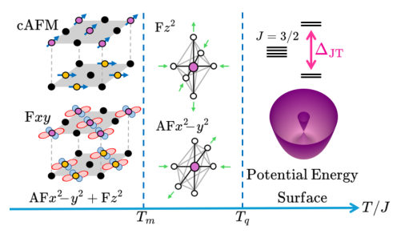
<figcaption class="paper-figure-caption"><b>Fig 1.</b> FIG. 1. Phases of the d1 double perovskites as a function of temperature, T/J. For T &lt; Tm, canted antiferromagnetic (cAFM) dipole order coexists with quadrupolar orders: no- tably antiferro-ordering of x2−y2 quadrupoles (AFx2−y2), ferro-ordering of z2 quadrupoles (Fz2), and weak ordering of T2g quadrupoles (Fxy) on the magnetic sites (pink and yellow dots are used to distinguish the different planes). Black dots represent non-magnetic ions. For Tm &lt; T &lt; Tq, dipolar mag- netic order vanishes and pure Eg quadrupolar order persists accompanied by depicted lattice distortions Qz2 and Qx2−y2. For T &gt; Tq, quadrupolar order vanishes but JT splitting of the j =3/2 quartet, with ∆JT = λQEg, persists...</figcaption>
</figure>
<figure class="paper-figure-card">
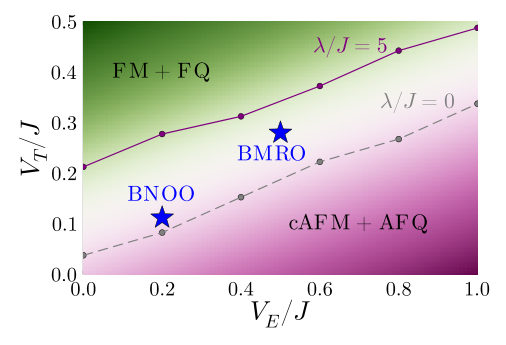
<figcaption class="paper-figure-caption"><b>Fig 2.</b> FIG. 2. Ground state phase diagram as a function of quadrupole interactions VE/J and VT /J. Dashed line shows the phase boundary between the FM+FQ phase (green) and cAFM+AFQ phase (pink) in the absence of vibronic coupling λ/J = 0. Incorporating λ/J ̸= 0 pushes the phase boundary upwards, e.g., solid line shows the displaced boundary for λ/J =5.0. Stars indicate illustrative choices of (VE/J, VT /J) for Ba2MgReO6 and Ba2NaOsO6.</figcaption>
</figure>
<figure class="paper-figure-card">
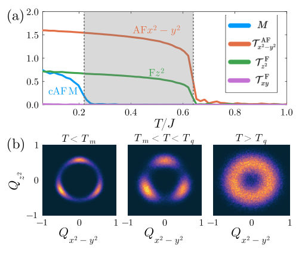
<figcaption class="paper-figure-caption"><b>Fig 3.</b> FIG. 3. Multipolar orders for (VE/J, VT /J) = (0.5, 0.25) and strong vibronic coupling λ/J = 15 relevant to Ba2MgReO6, and corresponding phonon distributions. (a) Order parame- ters, showing the high temperature paramagnetic phase, an intermediate temperature quadrupolar ordered phase (grey area) T &lt;Tq, and then dipolar magnetic ordering into a cAFM [110] order with coexisting quadrupolar orders for T &lt; Tm. (b) Phonon distributions for each phase, sampling over all lattice sites and 192 MC configurations. Below Tq, the distri- bution shows three peaks corresponding to tetragonal distor- tions along three equivalent axes. For T &gt;Tq, the distribution shows a ring structure originating from...</figcaption>
</figure>
<figure class="paper-figure-card">
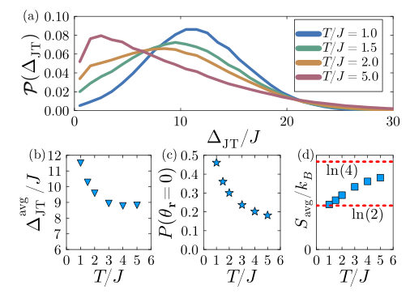
<figcaption class="paper-figure-caption"><b>Fig 4.</b> FIG. 4. Measures of local JT symmetry breaking at high tem- peratures for parameters relevant to Ba2MgReO6 with strong vibronic coupling λ/J = 15. (a) Distribution of local quartet splitting ∆JT over a range of temperatures in the paramag- netic regime. The distributions show a maximum at nonzero splitting with a long tail to large ∆JT. (b) Average local quar- tet splitting as a function of temperature T/J. The average splitting is nonzero even for T ≫Tq. (c) Temperature depen- dence for the height of the distribution of quadrupole-phonon angle, cos θr (defined in the text), at θr = 0. (d) Entropy Savg of the local j = 3/2 quartet averaged over the distribution of splittings in panel (a).</figcaption>
</figure>
<figure class="paper-figure-card">
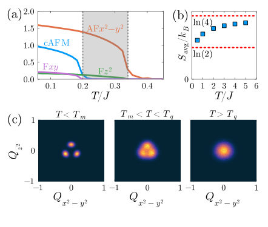
<figcaption class="paper-figure-caption"><b>Fig 5.</b> FIG. 6. (a) Nonzero T orders with vibronic coupling λ/J = 5. Similar to the strong coupling case, the low T phase exhibits coexisting cAFM, staggered x2 −y2, ferroic z2 and ferroic xy orders. Above Tm, the quadrupolar order persists and vanishes above Tq. (b) Average entropy Savg as a function of T/J in the paramagnetic phase. (c) Corresponding phonon distributions for the magnetically ordered phase (T &lt; Tm), the intermediate quadrupolar ordered phase (Tm &lt; T &lt; Tq) and the paramagnetic phase (T &gt; Tq).</figcaption>
</figure>
</div>

<p><strong>Summary.</strong> This work models $j=3/2$ Mott insulators where strong SOC couples electronic multipoles to lattice distortions via the Jahn-Teller effect. Using Monte Carlo simulations, the authors map out complex phase diagrams showing how coupling dictates ground state orders and thermal transitions. The findings highlight that phonon fluctuations suppress expected entropy and provide a framework for understanding correlated materials like double perovskites.</p>
<p><strong>Why it may be interesting.</strong> The coupling between electronic degrees of freedom (multipolar moments) and lattice vibrations (phonons) is a central theme in quantum materials physics. The use of advanced MC techniques to model coupled spin-phonon dynamics provides insights into emergent order parameters beyond simple mean-field treatments.</p>
<details>
<summary>Detailed structure</summary>
<p><strong>Main problem.</strong> The study investigates the complex interplay between strong atomic spin-orbit coupling (SOC) and Jahn-Teller (JT) lattice distortions in Mott insulators, focusing on determining ground states and understanding thermal fluctuations.</p>
<p><strong>Main result.</strong> The system exhibits distinct multipolar ground states whose nature is controlled by vibronic coupling; furthermore, thermal fluctuations significantly suppress the expected entropy of the coupled multipole-phonon system.</p>
<p><strong>Method.</strong> The research employs advanced computational techniques including SU(4) spin Monte Carlo simulations coupled to classical JT phonons and exact diagonalization calculations for spectral analysis.</p>
<p><strong>Model / system.</strong> The model focuses on $j=3/2$ Mott insulators, utilizing an $   ext{SU}(4)$ exchange Hamiltonian incorporating dipole, quadrupolar, and octupolar interactions, which is then coupled to local phonon modes via vibronic coupling.</p>
<p><strong>Key observables.</strong> Multipolar order parameters (dipolar, quadrupolar, octupolar), temperature-dependent spectral splittings ($P(\Delta_{JT})$), entropy ($S$), and quadrupole-phonon locking angles ($\cos 	heta_r$).</p>
<p><strong>Important parameters / regimes.</strong> Interaction ratios like $   ext{VE}/J$ and $    ext{VT}/J$, the vibronic coupling strength $\lambda/J$, and temperature $T/J$.</p>
<p><strong>Assumptions / limitations.</strong> The analysis often treats JT phonons classically, though a full quantum treatment of radial modes is suggested as necessary for complete reconciliation with experiments.</p>
<p><strong>Figures summary.</strong> Figures illustrate phase diagrams showing transitions between different multipolar orders (e.g., cAFM+AFQ $\leftrightarrow$ pure Eg quadrupolar) as temperature or interaction ratios change; other figures show the evolution of spectral distributions and entropy vs. temperature.</p>
<p><strong>Paper structure.</strong> The paper systematically analyzes the ground state by varying interaction parameters, then extends to finite temperatures using Monte Carlo methods to map out phase diagrams, followed by detailed analysis of spectroscopic signatures (like local splitting) and thermodynamic quantities (entropy).</p>
</details>
<details>
<summary>Abstract</summary>
<p>The interplay of strong atomic spin-orbit coupling with Jahn-Teller (JT) lattice distortions is an important theme in quantum materials hosting heavy atoms. A prototypical example of such a system is a degenerate $j = 3/2$ multiplet coupled to local phonon modes. Here, we study the multipolar ground states of this system as realized in Mott insulators, explore its thermal phase diagram via an $SU(4)$ spin Monte Carlo approach coupled to JT phonons, and study the temperature dependent splittings of the $j = 3/2$ multiplet as relevant to spectroscopic probes. Our work sheds light on coexisting distinct multipolar orders engendered by phonon coupling, role of thermal JT fluctuations, and the entropy of the coupled multipole-phonon system. We discuss broad implications for double perovskites $\rm Ba_2MgReO_6$, $\rm Ba_2NaOsO_6$ and lacunar spinels such as $\rm GaTa_4Se_8$ and $\rm GaNb_4Se_8$.</p>
</details>
<p><sub><a href="#top">↑ back to top</a></sub></p>

<p><a id="paper-2606.15113"></a></p>
<h3 id="optimal-toffoli-depth-multi-controlled-toffoli-decomposition-in-2d-qubit-layout"><a href="http://arxiv.org/abs/2606.15113v1">Optimal Toffoli-Depth Multi-Controlled Toffoli Decomposition in 2D Qubit Layout</a></h3>
<p><strong>Authors:</strong> Anik Basu Bhaumik, Suman Dutta, Anupam Chattopadhyay<br>
<strong>Type:</strong> both · <strong>Category:</strong> quantum information and computing · <strong>PDF:</strong> <a href="https://arxiv.org/pdf/2606.15113v1">https://arxiv.org/pdf/2606.15113v1</a><br>
<strong>Analysis basis:</strong> full PDF text, analyzed in chunks
<strong>Topic relevance:</strong> <code>QC/QI experiment</code> <strong>1/5</strong></p>
<div class="figure-strip-hint">↔ Scroll figures horizontally</div>
<div class="paper-figures-scroll">
<figure class="paper-figure-card">
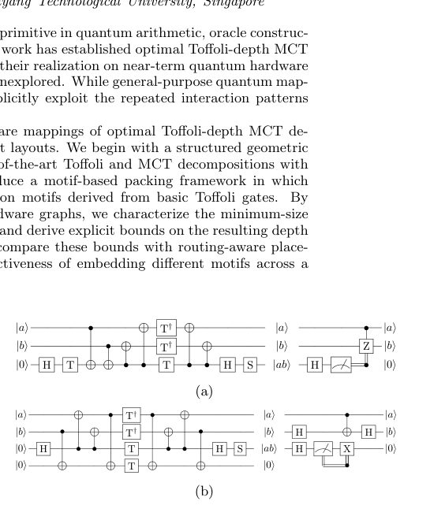
<figcaption class="paper-figure-caption"><b>Fig 1.</b> FIG. 1: Logical circuits for basic Toffoli decompositions with measurement-based uncomputation: (a) without ancilla [2], and (b) with a single reusable ancilla [3].</figcaption>
</figure>
<figure class="paper-figure-card">
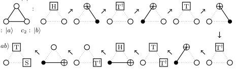
<figcaption class="paper-figure-caption"><b>Fig 2.</b> FIG. 3: (a) T-depth 6 Toffoli decomposition from [45], and (b) its corresponding 2D implementation.</figcaption>
</figure>
<figure class="paper-figure-card">
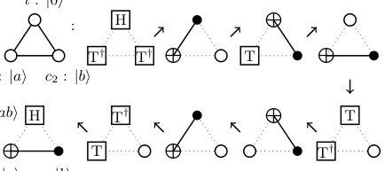
<figcaption class="paper-figure-caption"><b>Fig 3.</b> FIG. 4: (a) T-depth 4 Toffoli decomposition from [50], and (b) its corresponding 2D implementation.</figcaption>
</figure>
<figure class="paper-figure-card">
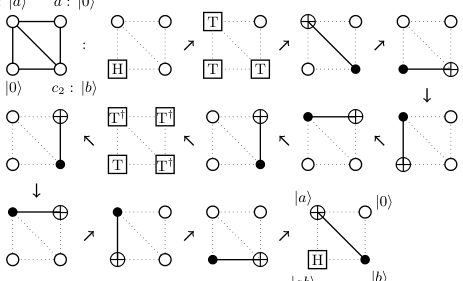
<figcaption class="paper-figure-caption"><b>Fig 4.</b> FIG. 6: (a) T-depth-2 Toffoli decomposition from [50], and (b) its corresponding 2D implementation.</figcaption>
</figure>
<figure class="paper-figure-card">
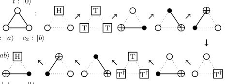
<figcaption class="paper-figure-caption"><b>Fig 5.</b> FIG. 5: (a) T-depth 3 Toffoli decomposition from [50], and (b) its corresponding 2D implementation.</figcaption>
</figure>
</div>

<p><strong>Summary.</strong> This paper tackles the challenge of mapping complex, theoretically optimal quantum circuits (like $n$-MCT gates) onto physically constrained 2D qubit lattices. It develops rigorous upper bounds for the resulting circuit depth by analyzing how fundamental gate motifs can be packed into the hardware graph structure. The results provide crucial guidelines for designing algorithms that are feasible on near-term quantum processors.</p>
<p><strong>Why it may be interesting.</strong> This work is highly relevant as it directly addresses the physical implementation gap in quantum computing theory by providing quantitative metrics on how logical circuit complexity translates into hardware depth limitations on realistic 2D architectures.</p>
<details>
<summary>Detailed structure</summary>
<p><strong>Main problem.</strong> The core problem is developing architecture-aware mapping strategies for optimal Multi-Controlled Toffoli (MCT) gate decompositions onto restricted two-dimensional qubit layouts.</p>
<p><strong>Main result.</strong> The authors derive explicit upper bounds on the depth overhead incurred during mapping by analyzing motif packing numbers ($P_3$ and $C_4$) within specific 2D topologies like square grids and hypercubes.</p>
<p><strong>Method.</strong> They employ a combination of theoretical bounding techniques (using graph motifs and packing numbers) and heuristic algorithms, such as solving the Maximum Independent Set problem on conflict graphs, to estimate achievable circuit depth.</p>
<p><strong>Model / system.</strong> The system is quantum computation implemented on near-term hardware constrained to 2D lattice topologies (e.g., square, triangular, hexagonal grids). The logical circuits are defined by MCT gates decomposed into basic Toffoli gates.</p>
<p><strong>Key observables.</strong> Tofoli depth, circuit depth, SWAP gate count/overhead, and the packing number of required interaction motifs ($P_3$, $C_4$).</p>
<p><strong>Important parameters / regimes.</strong> The size and connectivity of the 2D lattice ($p 	imes q$ grid, hypercube dimension $r$), and the number of controls in the MCT gate ($n$).</p>
<p><strong>Assumptions / limitations.</strong> The analysis assumes that mapping depth overhead can be bounded by motif packing limits, although practical heuristics often outperform worst-case theoretical bounds.</p>
<p><strong>Figures summary.</strong> Figures illustrate specific 2D implementations of $n$-MCT decompositions on various lattices (square, triangular, H-tree) and compare observed vs. theoretical depth overheads for motif packings ($P_3$, $C_4$) across different placement heuristics.</p>
<p><strong>Paper structure.</strong> The paper progresses from establishing the need for architecture-aware mapping to deriving general upper bounds based on graph motifs (Theorem 1 &amp; 2), providing specific resource estimates for various topologies (TABLE I, II, III), and finally validating these bounds using advanced packing algorithms like MIS heuristics.</p>
</details>
<details>
<summary>Abstract</summary>
<p>The multi-controlled Toffoli (MCT) gate is a key primitive in quantum arithmetic, oracle construction, and quantum cryptanalysis. Although recent work has established optimal Toffoli-depth MCT decompositions under all-to-all qubit connectivity, their realization on near-term quantum hardware with restricted qubit connectivity remains largely unexplored. While general-purpose quantum mappers can route arbitrary circuits, they do not explicitly exploit the repeated interaction patterns inherent in MCT decompositions.   In our present paper, we study architecture-aware mappings of optimal Toffoli-depth MCT decompositions onto restricted two-dimensional qubit layouts. We begin with a structured geometric placements that preserve the parallelism of state-of-the-art Toffoli and MCT decompositions with no additional depth overhead. We further introduce a motif-based packing framework in which decomposition layers are represented by interaction motifs derived from basic Toffoli gates. By embedding these motifs vertex-disjointly into hardware graphs, we characterize the minimum-size topologies supporting the required qubit resources and derive explicit bounds on the resulting depth overhead under tight qubit budgets. Finally, we compare these bounds with routing-aware placement heuristics and empirically evaluate the effectiveness of embedding different motifs across a range of hardware topologies.</p>
</details>
<p><sub><a href="#top">↑ back to top</a></sub></p>

<p><a id="paper-2606.15865"></a></p>
<h3 id="probing-interfacial-magnetic-anisotropy-in-texorpdfstringcovmath1637mathomath1638mathcov2o4-using-spin-hall-magnetoresistance"><a href="http://arxiv.org/abs/2606.15865v1">Probing Interfacial Magnetic Anisotropy in \texorpdfstring{CoV$_{2}$O$_{4}$}{CoV2O4} using Spin Hall Magnetoresistance</a></h3>
<p><strong>Authors:</strong> Sairam Ithineni, Krishna Jha, Aditya A. Wagh, Shwetha G. Bhat, Debashree Nayak, K. Senapati, P. S. Anil Kumar, D. Samal<br>
<strong>Type:</strong> experiment · <strong>Category:</strong> strongly correlated electrons · <strong>PDF:</strong> <a href="https://arxiv.org/pdf/2606.15865v1">https://arxiv.org/pdf/2606.15865v1</a><br>
<strong>Analysis basis:</strong> full PDF text, analyzed in chunks
<strong>Topic relevance:</strong> <code>spintronics-quantum-optics interface</code> <strong>1/5</strong></p>
<div class="figure-strip-hint">↔ Scroll figures horizontally</div>
<div class="paper-figures-scroll">
<figure class="paper-figure-card">
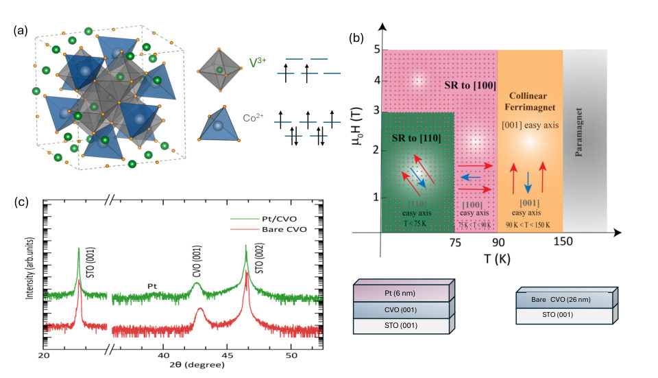
<figcaption class="paper-figure-caption"><b>Fig 1.</b> FIG. 1. (a) Crystal structure of CoV2O4 (CVO), illustrating the arrangement of CoO4 tetrahedra and VO6 octahedra along with their corresponding electronic configurations and spin states of Co2+ and V3+ ions. (b) Schematic magnetic phase diagram of CVO, illustrating the evolution of magnetic anisotropy and spin configurations with temperature. The red and blue arrows represent the spin orientations of Co and V ions, respectively, while the dotted arrows indicate the canting of V spins in the spin-reoriented phase. (c) θ–2θ X-ray diffraction patterns of the Pt/CVO bilayer and bare CVO thin films grown on STO(001), showing the CVO (00l) reflections and the additional Pt diffraction peak from...</figcaption>
</figure>
<figure class="paper-figure-card">

<figcaption class="paper-figure-caption"><b>Fig 2.</b> Figure 1(b) shows the θ–2θ scan of representative bare CoV2O4 (26 nm) and Pt (6 nm)/CoV2O4 (26 nm) thin films. The (001) diffraction peaks corre- sponding to the CVO layer are clearly observed in both samples, indicating oriented growth, while the Pt/CVO sample exhibits an additional peak aris- ing from the Pt overlayer. No impurity phases are detected, confirming that the crystallographic struc- ture of CVO remains preserved after Pt deposition.</figcaption>
</figure>
<figure class="paper-figure-card">
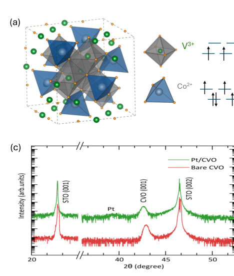
<figcaption class="paper-figure-caption"><b>Fig 3.</b> Figure 2(a) shows the temperature-dependent magnetisation measured under zero-field-cooled (ZFC) and field-cooled (FC) conditions in an applied field of 100 Oe over the temperature range 5 to 300 K, with the magnetic field applied along the in-plane (IP) and out-of-plane (OP) directions of CVO/STO (001). Consistent with previous reports, the system undergoes a paramagnetic-to-ferrimagnetic transi- tion near ∼150 K (Tc)[31, 36]. A spin reorien- tation from the out-of-plane (OP) to the in-plane (IP) direction occurs near ∼90 K (T1), accom-</figcaption>
</figure>
<figure class="paper-figure-card">
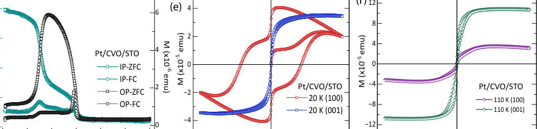
<figcaption class="paper-figure-caption"><b>Fig 4.</b> FIG. 2. Temperature- and field-dependent magnetic properties of bare CVO and Pt/CVO heterostructures. The upper panel [(a)–(c)] corresponds to bare CVO, while the lower panel [(d)–(f)] represents Pt/CVO. Panels (a) and (d) show the temperature dependence of the magnetization measured under zero-field-cooled (ZFC), field-cooled cooling (FCC), and field-cooled warming (FCW) protocols. Panels (b), (c), (e), and (f) display the magnetic field dependence of magnetization, M(H), measured at different temperatures, highlighting the evolution of magnetic hysteresis and saturation behavior in both systems.</figcaption>
</figure>
<figure class="paper-figure-card">
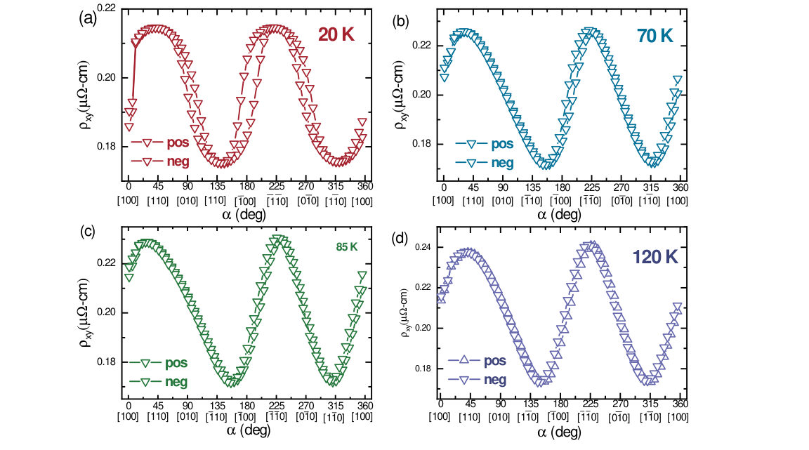
<figcaption class="paper-figure-caption"><b>Fig 5.</b> FIG. 3. Angular dependence of the transverse resistivity, ρxy, measured under positive and negative magnetic field sweeps at different temperatures for the Pt/CVO heterostructure under an applied magnetic field of 150 Oe. Panels (a)–(d) correspond to measurements performed at 20 K, 70 K, 85 K, and 120 K, respectively. The sinusoidal variation in ρxy with rotation angle α reflects the anisotropic magnetotransport response and its evolution with temperature.</figcaption>
</figure>
</div>

<p><strong>Summary.</strong> This study uses Spin Hall Magnetoresistance on $   ext{Pt}/    ext{CoV}_2  ext{O}_4$ thin films to investigate interfacial magnetic anisotropy. The SMR technique reveals a distinct biaxial in-plane easy axis at the interface, contradicting bulk measurements that suggest out-of-plane behavior. This highlights SMR's superior sensitivity for probing surface spin transport and establishes the material as a promising spintronic platform.</p>
<p><strong>Why it may be interesting.</strong> The work provides an excellent example of using transport measurements (SMR) to isolate and characterize subtle interfacial magnetic phenomena that are masked or misrepresented by bulk magnetization techniques, which is a key concept in modern spintronics research relevant to correlated oxides.</p>
<details>
<summary>Detailed structure</summary>
<p><strong>Main problem.</strong> The study investigates interfacial magnetic anisotropy in $   ext{CoV}_2  ext{O}_4$ ($    ext{CVO}$) thin films using Spin Hall Magnetoresistance (SMR) to distinguish surface effects from bulk behavior.</p>
<p><strong>Main result.</strong> SMR measurements reveal a distinct biaxial in-plane magnetic anisotropy for the $  ext{Pt}/    ext{CVO}$ interface, which contrasts with the bulk material's tendency toward out-of-plane anisotropy at higher temperatures.</p>
<p><strong>Method.</strong> The research employs angle-dependent magnetotransport measurements (SMR) on epitaxial thin-film heterostructures ($ ext{Pt}/    ext{CVO}$) and compares these results against standard DC magnetization measurements.</p>
<p><strong>Model / system.</strong> The physical system is the $    ext{Pt}/    ext{CoV}_2  ext{O}_4/   ext{STO}(001)$ heterostructure. The analysis relies on modeling magnetotransport phenomena using SMR theory, which probes spin current accumulation at the interface.</p>
<p><strong>Key observables.</strong> Angle-dependent transverse and longitudinal resistivity ($
ho_{xy}, 
ho_{xx}$), hysteresis loops in SMR scans, and the estimated spin mixing conductance ($G_{  ext{mix}}$).</p>
<p><strong>Important parameters / regimes.</strong> Temperature (down to 20 K), magnetic field strength (up to 3.5 kOe), and material parameters like the spin Hall angle of Pt.</p>
<p><strong>Assumptions / limitations.</strong> The SMR response is assumed to be highly sensitive to, and primarily reflect, the interfacial magnetic anisotropy rather than the bulk properties of $   ext{CVO}$.</p>
<p><strong>Figures summary.</strong> Figures illustrate structural confirmation via XRD, temperature-dependent magnetization curves (ZFC/FC), and angular dependence plots ($
ho_{xy}$ vs. angle) showing characteristic anisotropic modulations.</p>
<p><strong>Paper structure.</strong> The paper establishes the background on SMR as a probe for interfacial magnetism, presents experimental measurements comparing bulk magnetic data with SMR results, analyzes the directional dependence of the magnetotransport signal to deduce anisotropy type (biaxial in-plane), and concludes by quantifying the interface quality via spin conductance.</p>
</details>
<details>
<summary>Abstract</summary>
<p>Spin Hall magnetoresistance (SMR) has emerged as a powerful probe for investigating interfacial spin transport and magnetic anisotropy in complex oxide heterostructures. In this work, we investigate the interfacial magnetic anisotropy in Pt/CVO through angle-dependent magnetotransport measurements. Unlike the bulk-sensitive magnetic measurements on both strained CVO and Pt/CVO films, which exhibit a ferrimagnetic transition at $T_{C} \approx 150$ K accompanied by out-of-plane anisotropy that reorients toward in-plane anisotropy below 90 K, SMR reveals a distinct interfacial magnetic anisotropy. The rotational scans of the in-plane transverse SMR at 20 K exhibit substantial hysteresis about [100], while no hysteresis is observed along [110] and [1$\bar{1}$0], indicating a biaxial anisotropy with easy axes along [110] and [1$\bar{1}$0]. Furthermore, the absence of sharp discontinuities in both the in-plane longitudinal and transverse SMR, together with pronounced discontinuities near the in-plane [010] direction during out-of-plane rotation, strongly indicates the presence of in-plane anisotropy. This behavior persists up to 120 K. The discrepancy between the bulk-sensitive magnetic measurements and the SMR response suggests that the Pt/CVO interface retains a magnetic anisotropy distinct from the bulk, highlighting the interfacial sensitivity of SMR. Additionally, the spin mixing conductance is found to be of the order of $10^{14}$ $Ω^{-1}\mathrm{m}^{-2}$, comparable to other oxide-based spintronic systems. These findings highlight the crucial role of interfacial effects in spin transport and establish Pt/CVO as a promising platform for spintronic applications.</p>
</details>
<p><sub><a href="#top">↑ back to top</a></sub></p>

<p><a id="paper-2606.16397"></a></p>
<h3 id="quantum-oscillations-in-proximity-to-high-angular-momentum-band-inversion"><a href="http://arxiv.org/abs/2606.16397v1">Quantum oscillations in proximity to high-angular-momentum band inversion</a></h3>
<p><strong>Authors:</strong> Jiahao Yang, Gang v. Chen<br>
<strong>Type:</strong> theory · <strong>Category:</strong> other · <strong>PDF:</strong> <a href="https://arxiv.org/pdf/2606.16397v1">https://arxiv.org/pdf/2606.16397v1</a><br>
<strong>Analysis basis:</strong> full PDF text, analyzed in chunks
<strong>Topic relevance:</strong> <code>Keldysh / 2PI / non-Gaussian methods</code> <strong>1/5</strong></p>
<div class="figure-strip-hint">↔ Scroll figures horizontally</div>
<div class="paper-figures-scroll">
<figure class="paper-figure-card">
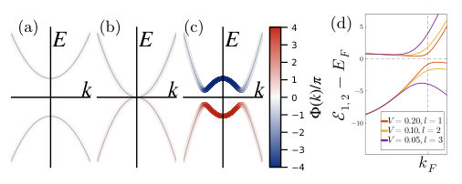
<figcaption class="paper-figure-caption"><b>Fig 1.</b> FIG. 1. HAM band inversion. (a) Trivial band insulator with δµ &lt; 0. (b) Quadratic band touching at δµ = 0. (c) Chern insulator with δµ &gt; 0. Here, Chern number C = 2 for l = 2, and the Berry phase Φ(k) is plotted with Φ(kF ) = 2π. The same structure extends to l ≥2, where the inverted insula- tor has the Chern number C = l. (d) Hybridized dispersions E1,2(k) for l = 1, 2, 3 with different hybridizations V . “kF ” denotes the crossing point of the unhybridized bands and is measured in inverse-length units.</figcaption>
</figure>
<figure class="paper-figure-card">
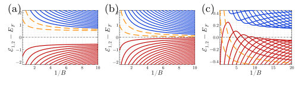
<figcaption class="paper-figure-caption"><b>Fig 2.</b> FIG. 2. Landau-level spectrum E1,2 n . (a,b) For δµ ≤0, the LLs are monotonic in 1/B, and the system remains (almost) insulating. (c) For δµ &gt; 0, the LLs are non-monotonic in 1/B, and the system cross overs from metallic-like to insulating behavior as 1/B increases. The orange dashed curve shows the corresponding unhybridized LLs for comparison.</figcaption>
</figure>
<figure class="paper-figure-card">
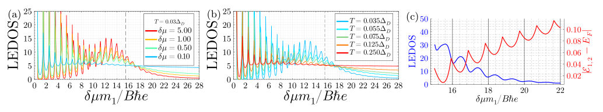
<figcaption class="paper-figure-caption"><b>Fig 3.</b> FIG. 3. Quantum oscillations of the LEDOS for the two-band model with l = 2. The oscillation behaviors for different detunings and temperatures are shown in (a) and (b), respectively. The vertical dashed line marks the critical field Bc. (c) Comparison between the oscillation amplitude and min(|E1,2 −EF |) at T = 0.035∆D.</figcaption>
</figure>
<figure class="paper-figure-card">
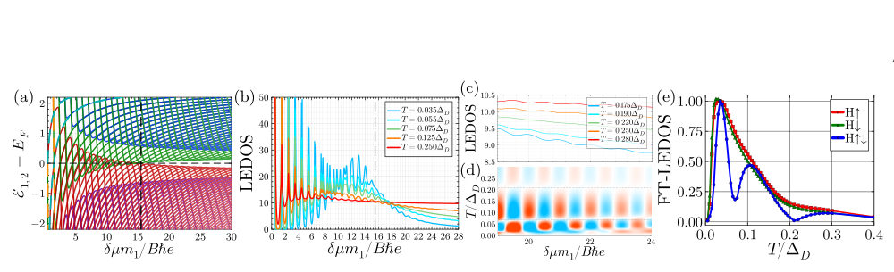
<figcaption class="paper-figure-caption"><b>Fig 4.</b> FIG. 4. (a) LL structures and (b) LEDOS oscillations of H↑↓ k . The vertical dashed line marks the critical field Bc. (c) Thermal evolution of the oscillations near Tc ≈0.21∆D. (d) The corresponding detrended oscillations, showing l = 2 characteristic temperatures. (e) Temperature dependence of the normalized Fourier-transformed (FT) amplitude.</figcaption>
</figure>
</div>

<p><strong>Summary.</strong> This theoretical work analyzes quantum oscillations near high-angular-momentum band inversion using minimal two-band and four-band models. The key finding is that the interference between time-reversal partners causes deviations from standard theory, producing unique temperature-dependent suppression signatures whose number directly tracks the angular momentum $l$. This offers an experimentally accessible fingerprint for characterizing such topological electronic states.</p>
<p><strong>Why it may be interesting.</strong> The focus on temperature-dependent interference effects and the explicit link between oscillation features (suppression temperatures) and a geometric parameter ($l$) provides a powerful, measurable diagnostic tool for exotic topological phases in condensed matter systems.</p>
<details>
<summary>Detailed structure</summary>
<p><strong>Main problem.</strong> The study investigates quantum oscillations (QOs) in electronic systems exhibiting High-Angular-Momentum (HAM) band inversion, particularly focusing on regimes beyond standard metallic Fermi surface quantization.</p>
<p><strong>Main result.</strong> The authors demonstrate that HAM band inversion leads to characteristic deviations from the Lifshitz-Kosevich form, manifesting as non-monotonic temperature dependence and suppression temperatures whose number scales with the angular momentum $l$.</p>
<p><strong>Method.</strong> Theoretical analysis involves calculating the oscillatory density of states (LEDOS) using semiclassical quantization rules derived from generalized two-band and four-band Hamiltonians.</p>
<p><strong>Model / system.</strong> The models include a minimal chiral two-band Hamiltonian and an extended time-reversal invariant four-band model, designed to capture topological transitions associated with band inversion ($\delta\mu$).</p>
<p><strong>Key observables.</strong> Quantum oscillation amplitude, frequency ($F_0$), temperature dependence of the LEDOS, and characteristic suppression temperatures ($T_c$).</p>
<p><strong>Important parameters / regimes.</strong> Angular momentum $l$, detuning parameter $\delta\mu$ (controlling inversion), magnetic field $B$, and temperature $T$.</p>
<p><strong>Assumptions / limitations.</strong> The analysis relies on semiclassical quantization rules for both metallic (Fermi surface crossing) and insulating (band-edge averaging) regimes, and assumes the applicability of thermal averaging kernels.</p>
<p><strong>Figures summary.</strong> Figures illustrate band structures showing inversion transitions, Landau level spectra ($E_{1,2}^n$ vs $1/B$), and crucially, detrended LEDOS oscillations confirming spectral weight suppression at characteristic temperatures whose count follows $l$.</p>
<p><strong>Paper structure.</strong> The paper progresses by first analyzing the two-band model in the insulating regime, then extending to a four-band time-reversal symmetric system. The core development involves deriving the total oscillatory LEDOS via interference between time-reversal partners, leading to the identification of $l$-dependent signatures.</p>
</details>
<details>
<summary>Abstract</summary>
<p>Quantum oscillations provide a fundamental probe of electronic structure in magnetic fields, revealing the Fermi surface topology in metals, and/or the quasiparticle properties even in the insulating regimes. Here we study quantum oscillations in minimal models of high-angular-momentum (HAM) band inversion for both a chiral two-band model and a time-reversal-invariant four-band model. In the former case, finite oscillations can appear at the hybridized Chern-insulating regime due to thermal-activated excitations. In the latter case, interference between the two time-reversal-related blocks drives a strong deviation from the Lifshitz-Kosevich form, producing a non-monotonic temperature dependence of the oscillation amplitude and characteristic suppression temperatures whose number follows the angular momentum $l$. These results identify experimentally accessible signatures of HAM band inversion and provide a framework for other discrete-symmetry-related hybridizations and excitonic pairings.</p>
</details>
<p><sub><a href="#top">↑ back to top</a></sub></p>

<p><a id="paper-2606.15213"></a></p>
<h3 id="quantum-classical-hybrid-models-based-on-error-correction-for-time-series-forecasting"><a href="http://arxiv.org/abs/2606.15213v1">Quantum-classical hybrid models based on error correction for time series forecasting</a></h3>
<p><strong>Authors:</strong> Jonathan H. A. de Carvalho, Filipe C. de L. Duarte, Fernando M. de Paula Neto, Paulo S. G. de Mattos Neto<br>
<strong>Type:</strong> theory · <strong>Category:</strong> other · <strong>PDF:</strong> <a href="https://arxiv.org/pdf/2606.15213v1">https://arxiv.org/pdf/2606.15213v1</a><br>
<strong>Analysis basis:</strong> full PDF text, analyzed in chunks
<strong>Topic relevance:</strong> <code>methods for driven-dissipative</code> <strong>1/5</strong></p>
<div class="figure-strip-hint">↔ Scroll figures horizontally</div>
<div class="paper-figures-scroll">
<figure class="paper-figure-card">
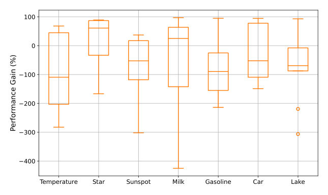
<figcaption class="paper-figure-caption"><b>Fig 1.</b> Fig. 1: Percentage performance gains that quantum-classical combinations based on error correction provided to the base classical models in different forecasting problems. In each of the seven problems, a box gathers nine samples of performance gains, which are obtained combining three quantum models with three classical models and then comparing with the respective classical models in the given problem.</figcaption>
</figure>
<figure class="paper-figure-card">
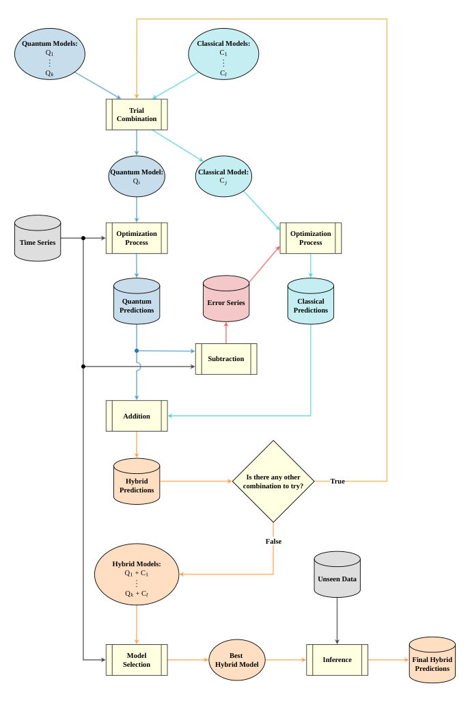
<figcaption class="paper-figure-caption"><b>Fig 2.</b> Fig. 2: Proposed system to optimize the error-correction-based quantum-classical hybridization for a given forecasting task. From pools that provide different model components, the procedure tries each combination of a quantum model and a classical model. The quantum model learns and predicts the original time series, which gives errors as the subtraction of the quantum predictions from the original observations. The classical model then learns and predicts the quantum errors. Adding the classical predictions to the quantum predictions generates the hybrid predictions of the current combination of models. Once there is no other combination to try, the procedure can select the best hybrid...</figcaption>
</figure>
<figure class="paper-figure-card">
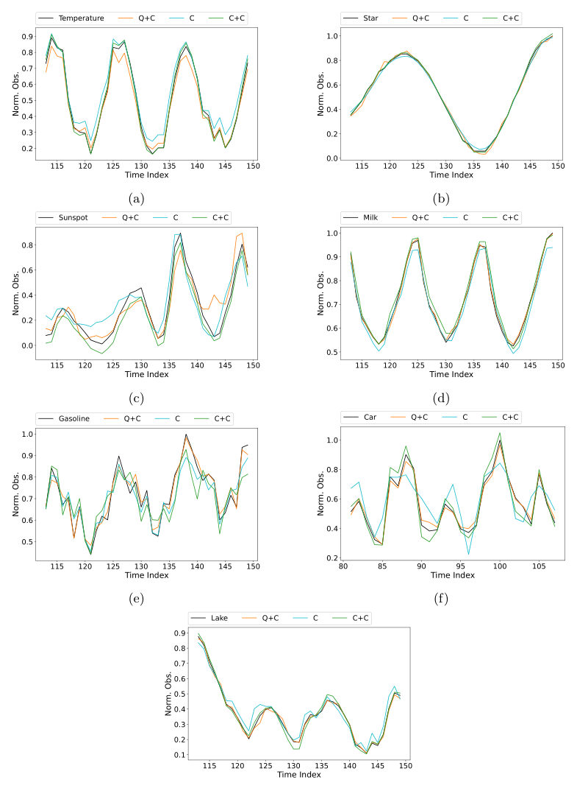
<figcaption class="paper-figure-caption"><b>Fig 3.</b> Fig. 3: Predictions of quantum-classical models and classical baselines in the seven problems. The target series and the three prediction series are represented by black, orange, cyan, and green lines. a,b,c,d,e,f,g, Predictions for the Temperature (a), Star (b), Sunspot (c), Milk (d), Gasoline (e), Car (f), and Lake (g) datasets.</figcaption>
</figure>
<figure class="paper-figure-card">
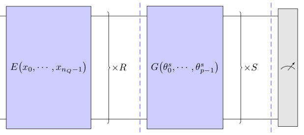
<figcaption class="paper-figure-caption"><b>Fig 4.</b> Fig. 4: General quantum circuit for machine learning tasks. The circuit basically contains two inner parts that are delimited with the aid of vertical dashed lines. The first part, represented from slice 1 to slice 2, is responsible for encoding the classical input data x0, · · · , xnQ−1 via an operator E(·) that can be repeated R times. The second part, from slice 2 to slice 3, acts on the quantum-encoded input data via an operator G(·) that is composed of the parameterized gates to be adjusted iteratively. Each repetition of the operator G(·) is dependent on a different set of parameters θs 0, · · · , θs p−1, where s = 0, · · · , S −1. Such a repeated application of the operator G(·)...</figcaption>
</figure>
<figure class="paper-figure-card">
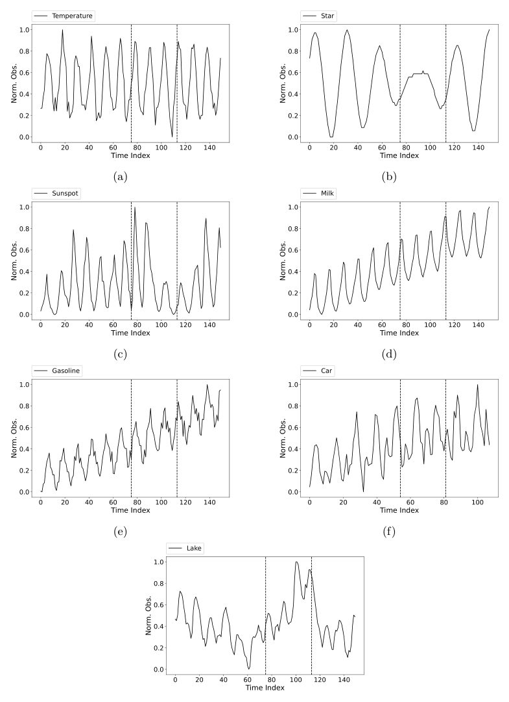
<figcaption class="paper-figure-caption"><b>Fig 5.</b> Fig. 5: Observations of the seven forecasting problems used to evaluate the models. The two vertical dashed lines separate the training, validation and test sets. a,b,c,d,e,f,g, Observations for the Tem- perature (a), Star (b), Sunspot (c), Milk (d), Gasoline (e), Car (f), and Lake (g) datasets.</figcaption>
</figure>
</div>

<p><strong>Summary.</strong> This work proposes a novel quantum-classical hybrid framework for time series forecasting by integrating quantum model predictions with classical error correction. The method calculates the initial prediction using a quantum circuit and then refines it by having a classical network predict the remaining systematic error. Results show that this synergistic combination significantly outperforms purely classical or single-model approaches on multiple benchmark datasets.</p>
<p><strong>Why it may be interesting.</strong> While not directly related to AMO physics, the methodology of using quantum circuits as feature extractors or pattern recognizers within a complex physical system (like time series data) mirrors concepts in open quantum systems modeling where environmental noise or residual dynamics are modeled classically.</p>
<details>
<summary>Detailed structure</summary>
<p><strong>Main problem.</strong> The research aims to improve time series forecasting accuracy by developing a novel hybrid model that combines quantum machine learning capabilities with classical error-correction techniques.</p>
<p><strong>Main result.</strong> The proposed quantum-classical hybrid system consistently provided superior predictive performance across most tested problems compared to single classical or purely classical-classical hybrid models.</p>
<p><strong>Method.</strong> The core methodology involves using a quantum model to generate an initial prediction, calculating the residual error, and then employing a classical model (like MLP or LSTM) trained on these errors to correct the quantum output. The final prediction is the sum of the quantum estimate and the classically predicted error correction.</p>
<p><strong>Model / system.</strong> The system utilizes parameterized quantum circuits for the quantum component ($ ext{Q}$) and established deep learning architectures (MLP, LSTM, NBEATS) for the classical component ($  ext{C}$). The hybridization is structured as $\hat{y}_{Q+C} = \hat{y}_Q + \hat{e}_C$, where $\hat{e}_C$ corrects the quantum prediction based on past errors.</p>
<p><strong>Key observables.</strong> Mean Squared Error (MSE), Mean Absolute Error (MAE), and Mean Absolute Percentage Error (MAPE) are used to quantify predictive accuracy across seven benchmark time series datasets (Temperature, Star, Sunspot, Milk, Gasoline, Car, Lake).</p>
<p><strong>Important parameters / regimes.</strong> The number of quantum features ($n_Q$) and the structure/hyperparameters of both the quantum circuit and the classical network are key parameters optimized during training.</p>
<p><strong>Assumptions / limitations.</strong> It is assumed that time series patterns contain components best captured by quantum phenomena, and that these quantum insights can be systematically combined with classical error modeling to yield synergistic improvements.</p>
<p><strong>Figures summary.</strong> Figures illustrate performance comparisons via heat maps (showing MSE across various model combinations) and plots demonstrating the cumulative error accumulation over time for different hybrid models on specific datasets like Sunspot.</p>
<p><strong>Paper structure.</strong> The paper establishes the need for advanced forecasting, details the quantum-classical error correction framework ($   ext{Q} 
ightarrow   ext{Error} 
ightarrow   ext{C}$), compares performance metrics (MSE/MAE/MAPE) against classical baselines ($  ext{C}$, $  ext{C}+ ext{C}$), and concludes that the hybrid approach offers significant, though context-dependent, gains.</p>
</details>
<details>
<summary>Abstract</summary>
<p>Time series forecasting largely benefits from combining the strengths of different models, especially using a scheme where a model corrects another model by capturing supplementary patterns from forecasting errors. Concurrently, quantum models are providing a means to augment the classical capacity, including in time series forecasting, by acting alongside classical models in hybrid architectures. In this work, we propose the first forecasting system based on error correction that jointly uses quantum and classical models. Here, quantum models first extract patterns by exploring quantum phenomena, and classical models capture the remaining patterns from the quantum errors. Compared to classical single models and classical-classical hybrid models based on error correction, the complementary capacity that emerges from this quantum-classical system provided the best results in most of the addressed problems. Therefore, this work paves the way to introduce quantum models in established hybridization schemes for time series forecasting.</p>
</details>
<p><sub><a href="#top">↑ back to top</a></sub></p>

<p><a id="paper-2606.16288"></a></p>
<h3 id="reconstruction-of-detector-error-model-for-quantum-error-correction"><a href="http://arxiv.org/abs/2606.16288v1">Reconstruction of detector error model for quantum error correction</a></h3>
<p><strong>Authors:</strong> Cheng Ye, Pan Zhang<br>
<strong>Type:</strong> theory · <strong>Category:</strong> quantum information and computing · <strong>PDF:</strong> <a href="https://arxiv.org/pdf/2606.16288v1">https://arxiv.org/pdf/2606.16288v1</a><br>
<strong>Analysis basis:</strong> full PDF text, analyzed in chunks
<strong>Topic relevance:</strong> <code>quantum measurements</code> <strong>1/5</strong></p>
<div class="figure-strip-hint">↔ Scroll figures horizontally</div>
<div class="paper-figures-scroll">
<figure class="paper-figure-card">

<figcaption class="paper-figure-caption"><b>Fig 1.</b> FIG. 1. Hierarchical accumulation of absolute and relative inference errors (the variance cascade). Data is shown at the sample sizes required for zero-false-positive topological reconstruction. (a) Surface code (5 × 106 shots) and (b) color code (1.5 × 107 shots) show a clear inflation of absolute error as hyperedge degree decreases due to algebraic downward subtraction. The horizontal dash-dotted lines denote the multi-body correlation truncation threshold (ϵmulti). (c) In the surface code, the relative error is strongly suppressed at lower degrees (degrees 1 and 2) because the intrinsic error probabilities in the denominator are comparatively large. (d) In the color code, the large...</figcaption>
</figure>
<figure class="paper-figure-card">

<figcaption class="paper-figure-caption"><b>Fig 2.</b> FIG. 2. End-to-end BP-OSD decoding performance and ablation analysis isolating topological vs. parameter sensitivity. Logical error rates (pL) are evaluated by collecting 200 (surface code) and 400 (color code) logical errors per point. Data spans three regimes corresponding to 1%, 10%, and 100% of the statistics required for DEM reconstruction without false positives. For both the (a) surface code and (b) color code, the unpruned Inference DEM fails at low statistics due to dense false-positive short cycles. By contrast, the Given DEM Topology (where the exact ideal topology is fed directly into the global correlation analysis with the pruning threshold set to zero, ϵ = 0, solely clipping...</figcaption>
</figure>
<figure class="paper-figure-card">

<figcaption class="paper-figure-caption"><b>Fig 3.</b> FIG. 3. Tensor network formulation of the Detector Error Model. (a) Graphical representation of the TNDEM architecture. Each de- tector corresponds to an XOR tensor, which enforces a logical parity constraint for propagating Pauli errors. Independent physical error mechanisms are represented by diagonal tensors, parameterized by their fault probability pe and identity probability 1 −pe. (b) Visu- alization of the exact tensor contraction corresponding to Eq. (B1). By projecting the detector indices onto specific boundary conditions, the global network contraction naturally decouples into a product of independent scalar contributions.</figcaption>
</figure>
</div>

<p><strong>Summary.</strong> The paper presents the CAHR algorithm to reconstruct complex error hypergraphs governing detector noise in Quantum Error Correction codes. It demonstrates that by separating topology discovery from parameter fitting, it can accurately model multi-body errors even with finite experimental data. This methodology is vital for advancing practical fault-tolerant quantum computing hardware.</p>
<p><strong>Why it may be interesting.</strong> This work provides rigorous mathematical tools to extract physical structure from noisy quantum measurements, which is crucial for designing reliable fault-tolerant hardware protocols. The explicit handling of high-order correlations addresses a major bottleneck in current QEC characterization techniques.</p>
<details>
<summary>Detailed structure</summary>
<p><strong>Main problem.</strong> The core challenge is accurately characterizing complex, multi-body error correlations (high-order hyperedges) from raw experimental syndrome statistics for fault-tolerant quantum computation.</p>
<p><strong>Main result.</strong> The proposed CAHR algorithm successfully reconstructs the exact physical hypergraph topology for both surface and color codes with zero false positives when sufficient statistics are available. Furthermore, structural topology is shown to be more critical for decoder performance than precise continuous parameter estimation under noise.</p>
<p><strong>Method.</strong> A Correlation-Analysis-based Hypergraph Reconstruction (CAHR) algorithm is introduced, which uses exact algebraic correlation equations derived from the Detector Error Model (DEM) and a top-down concurrent-pruning strategy to invert syndrome statistics into discrete hypergraphs.</p>
<p><strong>Model / system.</strong> The system modeled is Quantum Error Correction (QEC), specifically analyzing detector error models represented as hypergraphs. The analysis uses concepts like moment equations derived from the Tensor Network Detector Error Model (TNDEM) applied to codes like the rotated surface code and 2D color code.</p>
<p><strong>Key observables.</strong> Syndrome variables ($\sigma_i$), correlation moments ($M_{\alpha}$), physical error probabilities ($p_{\alpha}$), and the final Logical Error Rate ($p_L$) from decoding simulations.</p>
<p><strong>Important parameters / regimes.</strong> Sample size (number of shots, e.g., $5 	imes 10^6$ to $1.5 	imes 10^7$), code distance ($d=5$), and hyperedge order (up to 8-body).</p>
<p><strong>Assumptions / limitations.</strong> The analysis assumes the Pauli error model for noise, relies on a two-stage inference paradigm (topology first, then parameters), and uses Gaussian approximations when analyzing variance cascades.</p>
<p><strong>Figures summary.</strong> Figures compare end-to-end decoding performance ($p_L$) between an 'Inference DEM' (derived from noisy data) and a 'Given DEM Topology' (ideal structure), showing the latter is far more robust. One figure illustrates the additive accumulation of inference errors (variance cascade) across code depth.</p>
<p><strong>Paper structure.</strong> The paper introduces CAHR as a globally consistent framework, details its two-stage process (topology discovery followed by parameter optimization), validates it on specific codes (surface/color), and concludes by comparing the operational robustness of topology reconstruction versus simple parameter fitting.</p>
</details>
<details>
<summary>Abstract</summary>
<p>Fault-tolerant quantum computing fundamentally relies on the accurate characterization of circuit-level noise to optimize decoding algorithms. However, extracting complex multi-body error correlations remains challenging. Contemporary greedy inference algorithms can suffer from statistical distortion, discarding true physical mechanisms while introducing many unphysical false positives. Here, we introduce the Correlation-Analysis-based Hypergraph Reconstruction (CAHR) algorithm, a globally consistent framework to invert experimental syndrome statistics directly into discrete physical hypergraphs. By coupling exact algebraic correlation equations with a top-down concurrent-pruning strategy, CAHR recovers the fault topology without false positives for both $d=5$ rotated surface codes and dense 8-body 2D color codes in our benchmark settings. Furthermore, we show that exact continuous parameter extraction in dense codes is limited by a \textit{variance cascade}, where absolute statistical variance accumulates linearly from high- to low-degree mechanisms. This motivates a two-stage inference paradigm: utilizing CAHR to extract the fault topology, followed by continuous probability optimization. This provides a practical approach for characterizing and decoding highly correlated noise in realistic quantum hardware.</p>
</details>
<p><sub><a href="#top">↑ back to top</a></sub></p>

<p><a id="paper-2606.15108"></a></p>
<h3 id="temporal-modulation-as-a-resource-enhanced-frequency-estimation-in-continuous-variable-systems"><a href="http://arxiv.org/abs/2606.15108v1">Temporal modulation as a resource: enhanced frequency estimation in continuous variable systems</a></h3>
<p><strong>Authors:</strong> Ningxin Kong, Qiongyi He, Matteo G. A. Paris<br>
<strong>Type:</strong> theory · <strong>Category:</strong> other · <strong>PDF:</strong> <a href="https://arxiv.org/pdf/2606.15108v1">https://arxiv.org/pdf/2606.15108v1</a><br>
<strong>Analysis basis:</strong> full PDF text, analyzed in chunks
<strong>Topic relevance:</strong> <code>driven-dissipative phase transition</code> <strong>1/5</strong></p>
<div class="figure-strip-hint">↔ Scroll figures horizontally</div>
<div class="paper-figures-scroll">
<figure class="paper-figure-card">

<figcaption class="paper-figure-caption"><b>Fig 1.</b> FIG. 2. Time evolution of (a) the QFI Ft(t) and (b) the QFI enhancement ratio R(t) for an initial coherent state with α = 1 and a base frequency ω0 = 10. Results are compared across three distinct modulation profiles: linear (f(t) = 1+at, red lines), quadratic (f(t) = 1 + a1t + a2t2, yellow lines), and exponential (f(t) = eat, blue lines). The black reference lines in (a) indicate the asymptotic scalings t4, t6, and e2at. The modulation parameters are set to unity (a = a1 = a2 = 1).</figcaption>
</figure>
<figure class="paper-figure-card">

<figcaption class="paper-figure-caption"><b>Fig 2.</b> FIG. 1. Time evolution of the total QFI Ft(t) (black lines) evaluated under the WKB approximation, decomposed into its constituent contributions: the shearing (Fµ), squeezing (Fθ), rotation (Fγ), and cross-correlation (Fc) terms. The oscillator temporal dynamics are driven by (a) a linear frequency modulation f(t) = 1 + at and (b) an exponential frequency modulation f(t) = eat, with base frequency ω0 = 10 and modulation rate a = 1. Insets: Time dependence of the ratio FQ/Ft, where FQ is the CFI extracted from the optimal real-time homodyne measurement ˆQ.</figcaption>
</figure>
</div>

<p><strong>Summary.</strong> This paper demonstrates that dynamically modulating the frequency of a quantum oscillator can significantly enhance precision in frequency estimation beyond static limits. By tailoring the temporal modulation profile $f(t)$, researchers show that the Quantum Fisher Information scales robustly as O(F(t)^2). This establishes a universal paradigm for designing next-generation, high-precision quantum sensors.</p>
<p><strong>Why it may be interesting.</strong> This work provides a general theoretical framework for optimizing quantum sensors by treating time modulation itself as a controllable resource, which is highly relevant to advanced quantum optics and sensing applications.</p>
<details>
<summary>Detailed structure</summary>
<p><strong>Main problem.</strong> The primary goal is to enhance frequency estimation precision beyond conventional limits set by static encoding mechanisms in quantum metrology.</p>
<p><strong>Main result.</strong> Temporal modulation allows for the deterministic engineering of arbitrary precision scaling, with the Quantum Fisher Information (QFI) scaling as O(F(t)^2).</p>
<p><strong>Method.</strong> The authors analytically derive the QFI using a dynamic encoding protocol driven by time-dependent frequency modulation $\Omega(t) = \omega_0 f(t)$ in the adiabatic limit.</p>
<p><strong>Model / system.</strong> The model used is the Quantum Harmonic Oscillator (QHO), which serves as a universal platform for continuous variable quantum metrology. The Hamiltonian incorporates the time-dependent frequency modulation $\Omega(t)$.</p>
<p><strong>Key observables.</strong> Quantum Fisher Information (QFI), $F_g$, and the resulting precision limit governed by the Quantum Cramér-Rao Bound ($\Delta g$).</p>
<p><strong>Important parameters / regimes.</strong> The modulation profile function $f(t)$, its time integral $F(t) = \int f(s)ds$, and the energy constraint $E_0 = E(t)$.</p>
<p><strong>Assumptions / limitations.</strong> The analysis is performed in the adiabatic regime ($\left|rac{\dot{\Omega}(t)}{\Omega(t)^2}
ight| \ll 1$), assuming Gaussian initial states.</p>
<p><strong>Figures summary.</strong> Figures illustrate the time evolution of the QFI components (shearing, squeezing, rotation) and compare the enhancement ratio $R(t)$ for different modulation profiles (linear, quadratic, exponential).</p>
<p><strong>Paper structure.</strong> The paper establishes the problem in quantum metrology, introduces the dynamic encoding protocol via $\Omega(t)$, calculates the QFI by decomposing it into components, derives the scaling laws based on the adiabatic approximation, and concludes by demonstrating the universal applicability of this time-dependent control.</p>
</details>
<details>
<summary>Abstract</summary>
<p>Frequency estimation, a cornerstone of quantum metrology, has been significantly enhanced by advanced quantum sensing strategies. However, most protocols rely either on static or time-independent encoding mechanisms, inherently limiting their achievable precision scaling, or on control strategies requiring changing the Hamiltonian and/or implementing feedback mechanisms. To overcome this, we investigate a simpler dynamical encoding protocol where the quantum oscillator is driven by a general continuous temporal frequency modulation $Ω(t) = ω_0 f(t)$. We analytically demonstrate that for a given modulation profile $f(t)$ and its corresponding time-integral $F(t)$, the quantum Fisher information (QFI) scales as $\mathcal{O}(F(t)^2)$. This enhancement stems from the fact that temporal encoding fundamentally alters the mechanism of dynamical phase accumulation. Crucially, when evaluated under the energy and evolution-time constraints, this framework reveals a genuine precision enhancement over the conventional time-independent baseline. By analyzing explicit polynomial and exponential modulations, we establish that arbitrary precision scaling can be deterministically engineered, with ultimate bounds that are asymptotically saturable via optimal homodyne detection. Our framework provides a universal paradigm for exploiting time-dependent quantum control in next-generation sensors.</p>
</details>
<p><sub><a href="#top">↑ back to top</a></sub></p>
<h2 id="other-papers-13">Other papers (13)</h2>
<p><em>Papers from primary archives without highlighted authors or any topic match. Click to expand.</em></p>
<details>
<summary>Show other papers</summary>

<p><a id="paper-2606.15607"></a></p>
<h3 id="a-new-definition-of-quantum-superposition"><a href="http://arxiv.org/abs/2606.15607v1">A New Definition of Quantum Superposition</a></h3>
<p><strong>Authors:</strong> Stephen Bruce Sontz<br>
<strong>Type:</strong> theory · <strong>Category:</strong> other · <strong>PDF:</strong> <a href="https://arxiv.org/pdf/2606.15607v1">https://arxiv.org/pdf/2606.15607v1</a><br>
<strong>Analysis basis:</strong> full PDF text, analyzed in chunks</p>
<div class="figure-strip-hint">↔ Scroll figures horizontally</div>
<div class="paper-figures-scroll">
<figure class="paper-figure-card">

<figcaption class="paper-figure-caption"><b>Fig 1.</b> Low-resolution page preview, page 2</figcaption>
</figure>
<figure class="paper-figure-card">

<figcaption class="paper-figure-caption"><b>Fig 2.</b> Low-resolution page preview, page 3</figcaption>
</figure>
<figure class="paper-figure-card">

<figcaption class="paper-figure-caption"><b>Fig 3.</b> Low-resolution page preview, page 4</figcaption>
</figure>
<figure class="paper-figure-card">

<figcaption class="paper-figure-caption"><b>Fig 4.</b> Low-resolution page preview, page 5</figcaption>
</figure>
<figure class="paper-figure-card">

<figcaption class="paper-figure-caption"><b>Fig 5.</b> Low-resolution page preview, page 6</figcaption>
</figure>
</div>
<p><strong>Summary.</strong> This paper addresses the ambiguity in defining quantum superposition by reformulating it geometrically within complex projective space. It proposes that the superposition of two states is uniquely defined as the straight line connecting them in this geometric space. This provides a rigorous mathematical foundation independent of traditional summation rules.</p>
<p><strong>Why it may be interesting.</strong> This work provides a fundamental, purely geometrical reinterpretation of one of quantum mechanics' most basic concepts, potentially offering insights applicable beyond standard Hilbert space formalism.</p>
<details>
<summary>Detailed structure</summary>
<p><strong>Main problem.</strong> The standard description of quantum superposition is mathematically ambiguous because the summation operation used in Hilbert space does not translate cleanly to the quotient projective space ($    ext{CP}(H)$).</p>
<p><strong>Main result.</strong> A rigorous, geometrical definition of superposition is proposed: it is defined as the unique complex line passing through two distinct pure states viewed as points in $   ext{CP}(H)$.</p>
<p><strong>Method.</strong> The paper develops a geometric framework by treating quantum states as points in complex projective space and defining superposition based on collinearity axioms.</p>
<p><strong>Model / system.</strong> The model uses pure quantum states, represented geometrically as points in the complex projective space $   ext{CP}(H)$, where $H$ is a complex Hilbert space. The analysis compares this geometric definition to standard basis expansions.</p>
<p><strong>Key observables.</strong> Superposition itself (defined as a line/subspace), and the comparison between superposition and classical statistical mixtures derived from orthonormal basis expansions.</p>
<p><strong>Important parameters / regimes.</strong> The structure of the underlying Hilbert space $H$ and its associated projective geometry $ ext{CP}(H)$.</p>
<p><strong>Assumptions / limitations.</strong> The primary assumption is that viewing quantum states as points in $ ext{CP}(H)$ provides a natural geometric setting, and the definition relies on properties analogous to those found in complex projective geometry.</p>
<p><strong>Paper structure.</strong> The paper first identifies the ambiguity of superposition in $ ext{CP}(H)$, then proposes the line-based geometric definition for two states. It subsequently contrasts this with basis expansion and discusses generalizations to other mathematical spaces.</p>
</details>
<details>
<summary>Abstract</summary>
<p>The usual description of the superposition of two (pure quantum) states is ambiguous, since the binary operation of summation in a Hilbert space does not pass down to the quotient projective space. Even though Dirac noted this as early as 1930, it is often asserted that the superposition is a binary operation acting on two states with a value that is a unique state. The goal for this note is to motivate a rigorous, geometrical definition of the superposition of states in the setting of complex projective space, which has been argued elsewhere to be the natural geometric phase space for quantum theory. The upshot is that the new definition of the superposition of two pure states, viewed as two distinct points in the projective space, is the unique (complex) line on which those two points lie. Finally, a comparison is given between superposition and expansion in an orthonormal basis.</p>
</details>
<p><sub><a href="#top">↑ back to top</a></sub></p>

<p><a id="paper-2606.16418"></a></p>
<h3 id="a-short-proof-of-the-modified-kretschmann-schlingemann-werner-conjecture"><a href="http://arxiv.org/abs/2606.16418v1">A short proof of the modified Kretschmann-Schlingemann-Werner conjecture</a></h3>
<p><strong>Authors:</strong> Satvik Singh<br>
<strong>Type:</strong> theory · <strong>Category:</strong> quantum information and computing · <strong>PDF:</strong> <a href="https://arxiv.org/pdf/2606.16418v1">https://arxiv.org/pdf/2606.16418v1</a><br>
<strong>Analysis basis:</strong> full PDF text, analyzed in chunks</p>
<div class="figure-strip-hint">↔ Scroll figures horizontally</div>
<div class="paper-figures-scroll">
<figure class="paper-figure-card">

<figcaption class="paper-figure-caption"><b>Fig 1.</b> Low-resolution page preview, page 2</figcaption>
</figure>
<figure class="paper-figure-card">

<figcaption class="paper-figure-caption"><b>Fig 2.</b> Low-resolution page preview, page 3</figcaption>
</figure>
<figure class="paper-figure-card">

<figcaption class="paper-figure-caption"><b>Fig 3.</b> Low-resolution page preview, page 4</figcaption>
</figure>
</div>
<p><strong>Summary.</strong> This paper resolves a modified version of the Kretschmann-Schlingemann-Werner conjecture concerning quantum channels. It proves an inequality bounding the operator norm difference between two Stinespring isometries by the diamond norm distance between their corresponding quantum channels. This result provides a powerful quantitative tool for comparing quantum processes.</p>
<p><strong>Why it may be interesting.</strong> This work provides a rigorous quantitative link between the operational distance (diamond norm) of quantum processes and the structural distance (operator norm) of their underlying representations, which is fundamental for characterizing process fidelity in open quantum systems theory.</p>
<details>
<summary>Detailed structure</summary>
<p><strong>Main problem.</strong> The paper addresses a modified version of the Kretschmann-Schlingemann-Werner (KSW) conjecture, which relates the distance between two quantum channels to the distance between their Stinespring representations.</p>
<p><strong>Main result.</strong> It proves that for any two quantum channels $\Phi_1$ and $\Phi_2$, there exists a unitary $U$ such that the operator norm distance between their respective isometries satisfies $\|V_1-({f1}\otimes U)V_2\|_\infty\leq\sqrt{2}\|\Phi_1-\Phi_2\|_{\diamond}$.</p>
<p><strong>Method.</strong> The proof utilizes advanced tools from quantum information theory, including the diamond norm ($\|\cdot\|_{\diamond}$), operator norms ($\|\cdot\|_{\infty}$), and properties derived from the Stinespring dilation theorem.</p>
<p><strong>Model / system.</strong> The system under study involves general quantum channels $\Phi: \mathbb{M}_d(\mathbb{C})	o \mathbb{M}_n(\mathbb{C})$, which are completely positive and trace-preserving maps. These channels are analyzed via their Stinespring isometries $V$.</p>
<p><strong>Key observables.</strong> Diamond norm distance ($\|\cdot\|_{\diamond}$) between channels, and the minimum operator norm distance $\min_{U\in U(m)} \|V_1 - (1 \otimes U)V_2\|_{\infty}$ between the Stinespring isometries.</p>
<p><strong>Important parameters / regimes.</strong> The constant factor $\sqrt{2}$ in the derived inequality is shown to be optimal.</p>
<p><strong>Assumptions / limitations.</strong> The proof holds for any common dilation space $\mathbb{C}^m$ associated with the channels.</p>
<p><strong>Paper structure.</strong> The paper establishes relationships between various norms and uses mathematical tools like Lemma 3 to derive the final inequality, resolving the modified KSW conjecture in the affirmative.</p>
</details>
<details>
<summary>Abstract</summary>
<p>Let $Φ_1, Φ_2 : \mathbb{M}_d(\mathbb{C})\to \mathbb{M}_n(\mathbb{C})$ be two quantum channels with respective Stinespring isometries $V_1, V_2 : \mathbb{C}^{d}\to \mathbb{C}^{n} \otimes \mathbb{C}^{m}$ on any common dilation space $\mathbb{C}^{m}$. We prove that there exists a unitary $U$ on $\mathbb{C}^{m}$ such that $\|V_1-({\bf1}\otimes U)V_2\|_\infty\leq\sqrt{2\|Φ_1-Φ_2\|_\diamond},$ thus resolving vom Ende's modification of the Kretschmann-Schlingemann-Werner conjecture in the affirmative.</p>
</details>
<p><sub><a href="#top">↑ back to top</a></sub></p>

<p><a id="paper-2606.14933"></a></p>
<h3 id="analyzing-initialization-strategies-for-the-local-unitary-cluster-jastrow-ansatz-within-the-quantum-centric-supercomputing-framework"><a href="http://arxiv.org/abs/2606.14933v1">Analyzing Initialization Strategies for the Local Unitary Cluster Jastrow Ansatz within the Quantum-Centric Supercomputing Framework</a></h3>
<p><strong>Authors:</strong> Grier M. Jones, Maforikan J. Amoussou, Maximilian O. Leach, Hans-Arno Jacobsen<br>
<strong>Type:</strong> theory · <strong>Category:</strong> strongly correlated electrons · <strong>PDF:</strong> <a href="https://arxiv.org/pdf/2606.14933v1">https://arxiv.org/pdf/2606.14933v1</a><br>
<strong>Analysis basis:</strong> full PDF text, analyzed in chunks</p>
<div class="figure-strip-hint">↔ Scroll figures horizontally</div>
<div class="paper-figures-scroll">
<figure class="paper-figure-card">

<figcaption class="paper-figure-caption"><b>Fig 1.</b> Figure 1: Schematic diagram of the proposed workflow to analyze circuit initialization within the QCSC framework.</figcaption>
</figure>
<figure class="paper-figure-card">

<figcaption class="paper-figure-caption"><b>Fig 2.</b> Figure 2: Molecular structures comprising the three datasets used in this study. (i) A set of smaller molecules with multiple conformers, (ii) a benchmark set containing one representative conformer per molecule excluded from training and testing, and (iii) a set of larger and more chemically diverse molecules selected from the GDB-11 database.</figcaption>
</figure>
<figure class="paper-figure-card">

<figcaption class="paper-figure-caption"><b>Fig 3.</b> Figure 3: Both figures highlight the mean absolute percent error (MAPE) between the various initialization strategies in this study and the standard CCSD initialization. (a) Shows the MAPE (y-axis) for each initialization strategy (x-axis) with respect to the basis set (hue) using a box plot. (b) Highlights the MAPE (y-axis) for each molecule (x-axis) and basis set (columns) examined using a bar plot.</figcaption>
</figure>
<figure class="paper-figure-card">

<figcaption class="paper-figure-caption"><b>Fig 4.</b> Figure 4: Deviations (in mEh) between the converged energies of LUCJ ansätze initialized using various parameter injection strategies compared against the CCSD-initialized LUCJ ansatz, com- puted across a set of small organic molecules. Results are shown for five ansatz depths (L = 1–5, indicated by the hue) and three basis sets (STO-3G, cc-pVDZ, and aug-cc-pVDZ), arranged in a 5 × 3 grid by injection method (rows) and basis set (columns). The y-axis employs a symmetric logarithmic scale to accommodate the wide dynamic range of deviations observed across strategies and molecules. All deviations are reported relative to the CCSD-initialized ansatz energy, which by construction yields zero...</figcaption>
</figure>
<figure class="paper-figure-card">

<figcaption class="paper-figure-caption"><b>Fig 5.</b> Figure 5</figcaption>
</figure>
</div>
<p><strong>Summary.</strong> This research investigates how different starting points (initializations) affect the accuracy of electronic structure calculations using a complex quantum ansatz (LUCJ) simulated on a quantum computer. The key finding is that while initial parameters can vary wildly, the final calculated energy remains robustly accurate, suggesting that the core quantum diagonalization process dictates performance rather than the initialization method itself.</p>
<p><strong>Why it may be interesting.</strong> This work directly addresses the practical implementation challenges of quantum chemistry algorithms on near-term quantum hardware by identifying computationally cheaper, yet accurate, initialization pathways that bypass resource-intensive methods like full CCSD.</p>
<details>
<summary>Detailed structure</summary>
<p><strong>Main problem.</strong> The study analyzes how different initialization strategies affect the accuracy of electronic energy calculations performed using the Local Unitary Cluster Jastrow (LUCJ) ansatz within a quantum-centric supercomputing framework.</p>
<p><strong>Main result.</strong> The final electronic energies recovered by the SQD algorithm are largely insensitive to the initial parameters, suggesting that configuration recovery during the diagonalization process is more critical than the proximity of the initialization method to CCSD.</p>
<p><strong>Method.</strong> The authors compare six initialization strategies (including CCSD, MP2, random, and zero) for the LUCJ ansatz by running calculations on molecular systems using the sample-based quantum diagonalization (SQD) algorithm.</p>
<p><strong>Model / system.</strong> The model is electronic structure calculation of molecules solved via the Schrödinger equation using a nonrelativistic Born-Oppenheimer Hamiltonian. The wave function employs the LUCJ ansatz, which incorporates unitary orbital rotations and Jastrow factors.</p>
<p><strong>Key observables.</strong> Mean Absolute Percentage Errors (MAPEs) in $t_2$-amplitudes; resulting SQD electronic energies compared to CCSD reference energy; chemical accuracy ($\pm 1.6$ mEh).</p>
<p><strong>Important parameters / regimes.</strong> Basis sets tested include STO-3G, cc-pVDZ, and aug-cc-pVDZ; ansatz depths ($L=1$ to $5$).</p>
<p><strong>Assumptions / limitations.</strong> The primary assumption challenged is that the initial parameters' proximity to CCSD dictates the final energy accuracy in the quantum simulation.</p>
<p><strong>Figures summary.</strong> Figures summarize MAPE comparisons between initializations and show energy deviation trends ($\Delta E$) across ansatz depths and basis sets, demonstrating the lack of correlation between initialization error and final energy quality.</p>
<p><strong>Paper structure.</strong> The paper systematically compares multiple initialization methods (CCSD, MP2, ML-derived) for the LUCJ ansatz parameters. It analyzes performance metrics like MAPE in amplitude space versus the resulting converged electronic energies obtained via the SQD algorithm across various molecular systems and basis sets.</p>
</details>
<details>
<summary>Abstract</summary>
<p>In this study, we analyze the choice of local unitary cluster Jastrow (LUCJ) ansatz initialization and sensitivity of the sample-based quantum diagonalization (SQD) algorithm within the quantum-centric supercomputing (QCSC) framework. We examine six initialization strategies, including those based on coupled-cluster singles and doubles (CCSD), Møller-Plesset second-order perturbation theory (MP2), data-driven coupled-cluster (DDCC), and trivial (zeroes and random) initializations, across twelve molecular systems and three basis sets (STO-3G, cc-pVDZ, and aug-cc-pVDZ). We find that while the mean absolute percentage errors (MAPEs) between the alternative and CCSD-initialized t2-amplitudes span many orders of magnitude, the resulting SQD energies are largely insensitive to this variation. In particular, most initializations recover energies within chemical accuracy (+/-1.6 mEh) of the CCSD reference, with convergence improving as the basis set size increases. Notably, random initialization achieves performance competitive with CCSD across all basis sets, while zeroes initialization, despite having smaller deviations from CCSD, yields the worst energy agreement. Our results highlight that the proximity to the CCSD initialization is not a reliable predictor of the quality of electronic energies. These findings establish that configuration recovery within SQD, rather than circuit initialization, is the dominant factor governing energy accuracy, and suggest that computationally cheaper initialization strategies are viable alternatives to CCSD for QCSC workflows</p>
</details>
<p><sub><a href="#top">↑ back to top</a></sub></p>

<p><a id="paper-2606.15744"></a></p>
<h3 id="comparative-performance-analysis-of-nist-pqc-standards-from-stm32-software-limitations-to-fpga-soc-acceleration"><a href="http://arxiv.org/abs/2606.15744v1">Comparative Performance Analysis of NIST PQC Standards: From STM32 Software Limitations to FPGA-SoC Acceleration</a></h3>
<p><strong>Authors:</strong> Mustafa Akif Yıldırım, Osman Tokluoglu<br>
<strong>Type:</strong> experiment · <strong>Category:</strong> other · <strong>PDF:</strong> <a href="https://arxiv.org/pdf/2606.15744v1">https://arxiv.org/pdf/2606.15744v1</a><br>
<strong>Analysis basis:</strong> full PDF text, analyzed in chunks</p>
<div class="figure-strip-hint">↔ Scroll figures horizontally</div>
<div class="paper-figures-scroll">
<figure class="paper-figure-card">

<figcaption class="paper-figure-caption"><b>Fig 1.</b> Fig. 1 Dilithium signing procedure.</figcaption>
</figure>
<figure class="paper-figure-card">

<figcaption class="paper-figure-caption"><b>Fig 2.</b> Fig. 2 SPHINCS+ signing procedure.</figcaption>
</figure>
<figure class="paper-figure-card">

<figcaption class="paper-figure-caption"><b>Fig 3.</b> Fig. 4 Zedboard ZYNQ 7000 Board.</figcaption>
</figure>
<figure class="paper-figure-card">

<figcaption class="paper-figure-caption"><b>Fig 4.</b> Fig. 3 STM32F407G-DISC1 Board.</figcaption>
</figure>
<figure class="paper-figure-card">

<figcaption class="paper-figure-caption"><b>Fig 5.</b> Fig. 5 The top-level SW/HW co-design SoC architecture.</figcaption>
</figure>
</div>
<p><strong>Summary.</strong> This paper investigates the feasibility of running NIST PQC algorithms like Dilithium and SPHINCS+ on embedded systems. Testing revealed that standard microcontrollers fail due to memory or time constraints. The authors successfully overcame this by integrating an NTT accelerator into an FPGA fabric, proving that hardware-software co-design is essential for practical quantum-resistant embedded security.</p>
<p><strong>Why it may be interesting.</strong> While not directly related to fundamental AMO physics, the rigorous engineering challenge of implementing complex mathematical structures (like polynomial arithmetic in PQC) onto constrained digital hardware shares conceptual parallels with simulating quantum dynamics on limited computational resources.</p>
<details>
<summary>Detailed structure</summary>
<p><strong>Main problem.</strong> The study addresses the practical implementation challenges of NIST-standardized Post-Quantum Cryptography (PQC) signature schemes on resource-constrained embedded hardware.</p>
<p><strong>Main result.</strong> Pure software PQC implementations are non-viable for standard microcontrollers due to severe memory and timing limitations; however, a hardware-software co-design approach using FPGA acceleration achieves millisecond performance rates.</p>
<p><strong>Method.</strong> The authors conducted a comparative performance analysis by implementing SPHINCS+ and CRYSTALS-Dilithium on two platforms: an STM32 microcontroller (software-only) and a Zynq-7000 SoC (hardware/software co-design).</p>
<p><strong>Model / system.</strong> The experimental platforms include the ARM Cortex-M4 based STM32F407G microcontroller and the Xilinx Zynq-7000 ZedBoard SoC, which integrates a processor system with an Artix-7 FPGA fabric for acceleration.</p>
<p><strong>Key observables.</strong> Execution times for key generation and signature generation (measured in minutes vs. milliseconds); feasibility of execution under limited SRAM capacity.</p>
<p><strong>Important parameters / regimes.</strong> The comparison highlights the limitations imposed by 192 KB SRAM on the MCU versus the capability of offloading computationally heavy primitives like NTT to the FPGA fabric.</p>
<p><strong>Assumptions / limitations.</strong> The necessity of hardware acceleration is established because general-purpose MCUs lack the necessary resources for high-degree polynomial multiplications required by modern PQC schemes.</p>
<p><strong>Figures summary.</strong> Figures illustrate the setup of both the STM32F407G and Zynq-7000 boards, alongside schematic representations of the signing procedures for Dilithium and SPHINCS+.</p>
<p><strong>Paper structure.</strong> The paper follows a structure moving from identifying the quantum threat to testing baseline software performance on an MCU (showing failure), and finally proposing and demonstrating a hardware-software co-design solution using FPGA acceleration to achieve practical performance metrics.</p>
</details>
<details>
<summary>Abstract</summary>
<p>The rapid advancement of quantum computing poses a significant threat to classical public-key cryptographic systems, necessitating the transition to Post-Quantum Cryptography (PQC). This study investigates the implementation challenges of NISTstandardized signature schemes on resource-constrained embedded hardware. We present a comparative analysis of SPHINCS+ and CRYSTALS-Dilithium on an ARM Cortex-M4 (STM32F407G) microcontroller. Our findings reveal that SPHINCS+ is practically unusable in this software-only environment, with impractical execution times. Furthermore, the reference Dilithium implementation failed to execute entirely on the MCU due to severe RAM and timing constraints. To overcome these hardware limitations, we integrated a hardware-accelerated Dilithium core onto a Xilinx Zynq-7000 ZedBoard SoC. By implementing a specialized Number Theoretic Transform (NTT) accelerator in the FPGA fabric, we achieved successful execution with performance rates for key generation and signature generation at millisecond levels. These results demonstrate that while pure software PQC is non-viable for standard microcontrollers, a hardware-software codesign approach provides the necessary efficiency for quantumresistant embedded systems.</p>
</details>
<p><sub><a href="#top">↑ back to top</a></sub></p>

<p><a id="paper-2606.15620"></a></p>
<h3 id="dimensional-crossover-of-mass-anisotropy-in-ta-doped-wte2"><a href="http://arxiv.org/abs/2606.15620v1">Dimensional Crossover of Mass Anisotropy in Ta-doped WTe2</a></h3>
<p><strong>Authors:</strong> P. Das, D. Das, P. Kumar, Monika, S. Patnaik<br>
<strong>Type:</strong> experiment · <strong>Category:</strong> other · <strong>PDF:</strong> <a href="https://arxiv.org/pdf/2606.15620v1">https://arxiv.org/pdf/2606.15620v1</a><br>
<strong>Analysis basis:</strong> full PDF text, analyzed in chunks</p>
<div class="figure-strip-hint">↔ Scroll figures horizontally</div>
<div class="paper-figures-scroll">
<figure class="paper-figure-card">

<figcaption class="paper-figure-caption"><b>Fig 1.</b> Figure 1. (a) Room-temperature X-ray diffraction patterns of single-crystalline TaxW1-xTe2 (x = 0, 0.05, 0.1). The inset shows the schematic crystal structure of WTe2. (b) The (0 0 6) Bragg reflection for TaxW1-</figcaption>
</figure>
<figure class="paper-figure-card">

<figcaption class="paper-figure-caption"><b>Fig 2.</b> Figure 2. Temperature dependence of electrical resistivity ρ(T) for single-crystalline TaxW1-xTe2 (x = 0, 0.05, 0.1) in the absence of external magnetic field. All compositions show metallic behaviour. The residual resistivity ratio RRR increases monotonically with Ta substitution (145, 176, and 362 for x = 0, 0.05, and 0.1, respectively), indicating enhanced carrier mobility with doping.</figcaption>
</figure>
<figure class="paper-figure-card">

<figcaption class="paper-figure-caption"><b>Fig 3.</b> Figure 4. Effective carrier mobility μeff as a function of temperature for single-crystalline TaxW1-xTe2 (x = 0, 0.05, 0.1) at 5 K, 30 K, and 50 K. At 5 K, the mobility of Ta0.1W0.9Te2 (~65 × 10⁴ cm²V⁻¹s⁻¹) is more than double that of pristine WTe2 (~31 × 10⁴ cm²V⁻¹s⁻¹), consistent with the dramatically enhanced MR at x = 0.1.</figcaption>
</figure>
<figure class="paper-figure-card">

<figcaption class="paper-figure-caption"><b>Fig 4.</b> Figure 3. Transverse magnetoresistance MR(%) as a function of magnetic field B at 5 K for single- crystalline TaxW1-xTe2 (x = 0, 0.05, 0.1), with H applied along the c axis. All compositions display large, non-saturating parabolic MR up to 5 T. The MR evolves non-monotonically with Ta content, decreasing from 22,379% (x = 0) to 15,537% (x = 0.05) before rising sharply to 58,211% (x = 0.1) at 5 T. The inset shows the measurement geometry, with current I flowing along the b axis and field H applied along the c axis.</figcaption>
</figure>
<figure class="paper-figure-card">

<figcaption class="paper-figure-caption"><b>Fig 5.</b> Figure 5. Angle-dependent magnetoresistance of pristine WTe2 at (a) 5 K, (b) 30 K, and (c) 50 K for field orientations θ = 0°, 30°, 60°, and 90°, where θ is the angle between the applied field H and the crystallographic c axis. The MR decreases systematically as the field is rotated from H ∥ c (θ = 0°) toward H ∥ ab (θ = 90°), reflecting strong transport anisotropy. The angular anisotropy is most pronounced at 5 K and diminishes with increasing temperature. (d) Transverse MR (H ∥ c) at 5 K, 30 K, and 50 K as a function of field. The inset shows the temperature dependence of MR at 5 T on a logarithmic scale, with values of 22,379%, 764%, and 127% at 5 K, 30 K, and 50 K, respectively.</figcaption>
</figure>
</div>
<p><strong>Summary.</strong> This work systematically studies Ta-doping in WTe2, demonstrating that doping enhances carrier mobility and deepens 2D character, leading to record magnetoresistance. The study reveals that while anisotropy is tunable, the system undergoes a transition to a multi-pocket Fermi surface at higher doping levels. Overall, it establishes that key transport parameters—anisotropy, compensation, and mobility—can be independently controlled in this topological semimetal.</p>
<p><strong>Why it may be interesting.</strong> While focused on condensed matter physics, the ability to tune electronic properties (anisotropy, mobility) via chemical doping provides a model for engineering quantum states or transport channels relevant to advanced quantum devices.</p>
<details>
<summary>Detailed structure</summary>
<p><strong>Main problem.</strong> The study investigates whether the anisotropic transport characteristics of WTe2 persist when chemically substituted with Ta, and how doping affects the control mechanisms behind large magnetoresistance (XMR).</p>
<p><strong>Main result.</strong> Ta substitution enhances carrier mobility and deepens quasi-two-dimensional Fermi surface character, leading to record high MR values; however, at higher doping levels, the system transitions to a multi-pocket Fermi surface regime.</p>
<p><strong>Method.</strong> The research combines angle-dependent magnetotransport measurements with structural analysis (XRD) and fitting data using mass anisotropy scaling frameworks.</p>
<p><strong>Model / system.</strong> The physical system is single-crystalline Ta-doped WTe2 ($  ext{Ta}<em 1-x>x   ext{W}</em>_2$), a layered van der Waals semimetal. Analysis employs semiclassical models for magnetoresistance and nonlinear Hall resistivity to probe multiband transport.}    ext{Te</p>
<p><strong>Key observables.</strong> Magnetoresistance (MR) up to 58,211%; mass anisotropy parameter ($\gamma$); effective carrier mobility ($\mu_{	ext{eff}}$); residual resistivity ratio (RRR).</p>
<p><strong>Important parameters / regimes.</strong> Doping concentration ($x=0, 0.05, 0.1$); Temperature ($T$); Magnetic field strength ($B$).</p>
<p><strong>Assumptions / limitations.</strong> The analysis relies on the mass anisotropy scaling framework and semiclassical models for transport phenomena.</p>
<p><strong>Figures summary.</strong> Figures show XRD patterns confirming $c$-axis contraction with Ta content, and magnetotransport curves demonstrating a sharp rise in MR at $x=0.1$.</p>
<p><strong>Paper structure.</strong> The paper systematically analyzes the effect of Ta doping on crystal structure (XRD), transport anisotropy ($\gamma$ scaling), carrier dynamics ($\mu_{	ext{eff}}$ enhancement), and Fermi surface topology (breakdown of single-ellipsoid scaling, nonlinear Hall response).</p>
</details>
<details>
<summary>Abstract</summary>
<p>The observation of extremely large magnetoresistance in WTe2 has attracted considerable attention towards understanding its underlying origin. With its layered van der Waals structure, the question that remains largely unexplored is whether the three-dimensional anisotropic transport characteristics of WTe2 persists under chemical substitution. Here, we present a systematic angle-dependent magneto-transport study of single-crystalline TaxW1-xTe2 (x = 0, 0.05, 0.1). The results are analysed within a mass anisotropy scaling framework to extract the mass anisotropy parameter γ as a function of temperature and doping. It is observed that Ta substitution leads to monotonic increase of γ across all temperatures, indicating a progressive deepening of quasi-two-dimensional Fermi surface character. Ta doping also leads to a substantial improvement in crystalline quality, reflected in a pronounced increase in the residual resistivity ratio. Despite weakening electron-hole compensation, the magnetoresistance rises sharply to ~58,211% at x = 0.1, which is assigned to a substantial enhancement in carrier mobility. Rietveld refinement confirms a systematic c-axis contraction with Ta content, identifying the structural origin of the enhanced anisotropy. The mass anisotropy scaling that holds for x = 0 and x = 0.05 breaks down for x = 0.1, where the angular magneto-resistance anisotropy substantially exceeds single-ellipsoid predictions, pointing to a multi-pocket Fermi surface with distinct anisotropies. Nonlinear Hall resistivity provides independent evidence for the underlying multiband character of transport in this system. These findings demonstrate that Fermi surface anisotropy, carrier compensation, and mobility are independent parameters that can lead to tuneable control of large magnetoresistance in topological semimetal WTe2.</p>
</details>
<p><sub><a href="#top">↑ back to top</a></sub></p>

<p><a id="paper-2606.16199"></a></p>
<h3 id="efficient-magic-state-factory-via-transversal-non-clifford-gate"><a href="http://arxiv.org/abs/2606.16199v1">Efficient Magic State Factory Via Transversal Non-Clifford Gate</a></h3>
<p><strong>Authors:</strong> I-Chi Chen, Hrushikesh Pramod Patil, Huiyang Zhou, Andrew Sornborger<br>
<strong>Type:</strong> theory · <strong>Category:</strong> quantum information and computing · <strong>PDF:</strong> <a href="https://arxiv.org/pdf/2606.16199v1">https://arxiv.org/pdf/2606.16199v1</a><br>
<strong>Analysis basis:</strong> full PDF text, analyzed in chunks</p>
<div class="figure-strip-hint">↔ Scroll figures horizontally</div>
<div class="paper-figures-scroll">
<figure class="paper-figure-card">

<figcaption class="paper-figure-caption"><b>Fig 1.</b> FIG. 1. Performance of magic state preparation using transversal gate. (a) The logical infidelity and (b) the suc- cess rate of T |+⟩L and S |+⟩L preparations using transversal T are estimated by state vector (SV) simulation (red line: T |+⟩L and blue line: T |+⟩L) and Clifford (CL) gate simula- tion (purple line: S |+⟩L) with varying noise levels. Note that the Clifford circuit simulation is simulated under the uniform noise model, while the state vector simulation is executed un- der an approximate uniform noise model, which serves as an upper bound for the uniform noise model and can be sim- ulated using fewer qubits. The exponents of fitting lines are calculated using...</figcaption>
</figure>
<figure class="paper-figure-card">

<figcaption class="paper-figure-caption"><b>Fig 2.</b> FIG. 2. The workflow of the end-to-end process for preparing a magic state using the doubled color code. The procedure of end-to-end magic state preparation using transversal gate and lattice surgery from (a) 2D color code and (b) double color code into a large rotated surface code is depicted. At the first step, before the transversal T gate (shown as TL), one round of Z-type stabilizer measurements is applied. For the second step at (a), CS is applied from doubled color code to 2D color code using a one-way transversal CNOT gate. Then, the logical X is measured (represented by MX). If the outcome gives 1L, the logical Z will be applied to the 2D color code. Otherwise, no operation is...</figcaption>
</figure>
<figure class="paper-figure-card">

<figcaption class="paper-figure-caption"><b>Fig 3.</b> FIG. 3. The performance for ungrown d = 3 code switch protocol (with and without the idling noise). (a) The logical error rates and (b) the acceptance rates vary- ing with the physical noise strength for [[15, 1, 3]] (with idling noise in orange (‘·’ markers) and with idling noise labeled in red dashed lines (‘□’ marker).) CS protocol. The number of rounds is r = 2 after the transversal CNOT code switch. The error bar is the standard error from the successful shots (errors bars are not visible in the plot as the errors bars are order of magnitude smaller than the values of lagical errors and acceptance rate).</figcaption>
</figure>
<figure class="paper-figure-card">

<figcaption class="paper-figure-caption"><b>Fig 4.</b> FIG. 4. The performance for ungrown d = 5 code switch protocol (without idling noise). (a) The logi- cal error rates and (b) the acceptance rates varying with the physical noise strength for [[49, 1, 5]] (49q in blue lines) and [[53, 1, 5]] (53q in green lines) CS protocol. The dashed line and solid lines means different number of syndrome measure- ment rounds (r = 5 and r = 3 respectively) after the transver- sal CNOT code switch. The error bar is the standard error from the successful shots.</figcaption>
</figure>
<figure class="paper-figure-card">

<figcaption class="paper-figure-caption"><b>Fig 5.</b> FIG. 5. The illustration of lattice surgery between 3D color code and rotated surface code. (a)The surface code initialized with all data qubits |+⟩states and the color code with T |+⟩L. (b) The X-type ( green) and Z-type (pink) stabilizers from the surface code and the boundary between surface code and color code. (c) The stabilizers of the surface code after the lattice surgery and XL measurement of the color code. Since the stabilizer XαXβXγXδXϵXεXζXη from color code doesn’t commute with ZγZ1 and ZδZλZ2Z3, the stabilizer becomes X1X2XαXβXγXδXϵXεXζXη during the lattice surgery. After the lattice surgery, the color code is measured in the XL basis by measuring all qubits individually in X...</figcaption>
</figure>
</div>
<p><strong>Summary.</strong> This paper develops and compares advanced protocols for generating magic states necessary for fault-tolerant quantum computing. It integrates code switching and lattice surgery to transfer logical information between different QEC codes like color and surface codes. The results propose optimized methods that improve fidelity and reduce resource overhead compared to existing techniques.</p>
<p><strong>Why it may be interesting.</strong> This work provides concrete, resource-aware benchmarks for implementing universal quantum computation primitives (magic states) using state-of-the-art QEC structures, which is crucial for scaling up any physical quantum hardware platform.</p>
<details>
<summary>Detailed structure</summary>
<p><strong>Main problem.</strong> The work aims to thoroughly compare the resource requirements and performance between two methods for generating magic states: code-switch-based factories versus direct magic-state cultivation.</p>
<p><strong>Main result.</strong> Two new fault-tolerant protocols combining phase-kickback checks with a transversal non-Clifford gate were proposed, showing consistent performance across different noise models and code distances.</p>
<p><strong>Method.</strong> The study uses end-to-end simulations of the entire magic-state preparation process, involving lattice surgery (LS) to transfer state information between various Quantum Error Correction (QEC) codes like color codes and surface codes.</p>
<p><strong>Model / system.</strong> The research focuses on fault-tolerant quantum computation using multiple QEC codes, including the 2D/3D color code, rotated surface code, and tetrahedral code. The protocols are designed to generate logical magic states ($T|+ 
angle_L$ or $S|+ 
angle_L$).</p>
<p><strong>Key observables.</strong> Logical infidelity, success rate of magic-state preparation, and the expected space-time volume per successful shot (V).</p>
<p><strong>Important parameters / regimes.</strong> Physical gate error rates ($\epsilon$), code distances ($d=3, d=5$), and noise models (with/without idling noise).</p>
<p><strong>Assumptions / limitations.</strong> The analysis often approximates noisy circuits due to large qubit counts and sometimes uses $S|+ 
angle_L$ as a proxy for the non-Clifford $T|+ 
angle_L$ state preparation.</p>
<p><strong>Figures summary.</strong> Figures illustrate the workflow of end-to-end magic state preparation using code switching, comparing logical infidelity vs. noise strength across different dimensions and protocols.</p>
<p><strong>Paper structure.</strong> The paper develops new combined protocols by integrating transversal non-Clifford gates with established techniques like code switching (CS) and lattice surgery (LS), culminating in detailed performance comparisons across various error regimes.</p>
</details>
<details>
<summary>Abstract</summary>
<p>Magic-state preparation is a central component of fault-tolerant quantum computing. Recent theoretical and experimental successes in code-switch-based magic-state preparation have underscored the promise of these methods for quantum error correction. Similarly, magic-state cultivation has likewise been demonstrated in both numerical and experimental settings. However, a thorough comparison between magic-state cultivation and code-switch-based magic-state factories is still missing. In this work, we carry out end-to-end simulations of magic-state preparation using code switching and compare its resource requirements and performance against magic-state cultivation. As part of this analysis, we develop a lattice-surgery protocol for transfer between the doubled color code and the rotated surface code. We extend the complete code-switching protocol to the $d=5$ doubled color code and perform the corresponding end-to-end simulations. Finally, we propose two fault-tolerant magic-state preparation protocols that combine phase-kickback checks with a transversal non-Clifford gate.</p>
</details>
<p><sub><a href="#top">↑ back to top</a></sub></p>

<p><a id="paper-2606.16181"></a></p>
<h3 id="evaluating-the-structural-basis-for-polar-altermagnet-candidate-camath1729mathrutimath1730mathomath1731math"><a href="http://arxiv.org/abs/2606.16181v1">Evaluating the Structural Basis for Polar Altermagnet Candidate Ca$_{3}$(Ru,Ti)$_{2}$O$_{7}$</a></h3>
<p><strong>Authors:</strong> Akash Saha, Yihuang Xiong, Vladimir A. Stoica, Subin Mali, Aaron Pearre, Saugata Sarker, Huaiyu Wang, Yufei Zhao, Evguenia Karapetrova, Yu Wang, Jadupati Nag, Zachary W. Hazenstab, Seng Huat Lee, Long-Qing Chen, Geoffroy Hautier, Binghai Yan, Zhiqiang Mao, Venkatraman Gopalan<br>
<strong>Type:</strong> both · <strong>Category:</strong> strongly correlated electrons · <strong>PDF:</strong> <a href="https://arxiv.org/pdf/2606.16181v1">https://arxiv.org/pdf/2606.16181v1</a><br>
<strong>Analysis basis:</strong> full PDF text, analyzed in chunks</p>
<div class="figure-strip-hint">↔ Scroll figures horizontally</div>
<div class="paper-figures-scroll">
<figure class="paper-figure-card">

<figcaption class="paper-figure-caption"><b>Fig 1.</b> FIG. 1: Candidate crystal structures of Ca3Ru2O7 and their associated diffraction signatures.</figcaption>
</figure>
<figure class="paper-figure-card">

<figcaption class="paper-figure-caption"><b>Fig 2.</b> FIG. 2: Absence of diffraction signatures associated with Pn21a structure in Ca3Ru2O7 . (a)</figcaption>
</figure>
<figure class="paper-figure-card">

<figcaption class="paper-figure-caption"><b>Fig 3.</b> FIG. 3: Estimation of an upper bound associated with the Pn21a distortion from diffraction</figcaption>
</figure>
<figure class="paper-figure-card">

<figcaption class="paper-figure-caption"><b>Fig 4.</b> FIG. 4: Ti substitution as a proxy for Hubbard U. (a) Experimentally observed phases in Ca3Ru2O7</figcaption>
</figure>
<figure class="paper-figure-card">

<figcaption class="paper-figure-caption"><b>Fig 5.</b> FIG. 5: Lack of structural evidence of Pn21a phase in Ca3(Ru0.99Ti0.01)2O7 . (a) Integrated line</figcaption>
</figure>
</div>
<p><strong>Summary.</strong> The research investigates the structural basis for altermagnetism in $ ext{Ca}_3(  ext{Ru},    ext{Ti})_2  ext{O}_7$. Despite theoretical predictions of a symmetry-lowering phase transition ($Pn21a$), detailed X-ray diffraction experiments found no evidence of this lattice distortion. The authors conclude that the observed electronic symmetry breaking is likely decoupled from measurable structural changes, suggesting an electronically driven mechanism for altermagnetism.</p>
<p><strong>Why it may be interesting.</strong> This work is highly relevant because it addresses the fundamental question of whether magnetic/electronic phase transitions in correlated oxides are accompanied by measurable lattice distortions or if they can be purely electronic, a key concept in modern condensed matter theory.</p>
<details>
<summary>Detailed structure</summary>
<p><strong>Main problem.</strong> The study investigates whether the predicted structural phase transition from a polar altermagnet candidate ($    ext{Ca}_3   ext{Ru}_2   ext{O}_7$) is structurally mandated or purely electronic in origin.</p>
<p><strong>Main result.</strong> Experimental X-ray diffraction measurements failed to detect the symmetry-lowering $Pn2_1a$ phase, placing tight upper bounds on structural distortions. Instead, evidence suggests that the observed symmetry breaking is primarily electronic, leading to a chemically tunable G-type altermagnetic (G-ALM) state within the higher symmetry $Bb2_1m$ structure.</p>
<p><strong>Method.</strong> The work combines synchrotron X-ray diffraction measurements with advanced DFT+U calculations incorporating spin-orbit coupling and Hubbard U parameters.</p>
<p><strong>Model / system.</strong> The system is $ ext{Ca}_3(  ext{Ru},    ext{Ti})_2  ext{O}_7$, a correlated electron oxide exhibiting complex magnetic ordering (AFM, G-ALM) and potential structural transitions between $Bb2_1m$ and $Pn2_1a$.</p>
<p><strong>Key observables.</strong> Diffraction peak intensities ($I_{HKL}$), structural distortion amplitude ($\lambda$), electronic band gap opening, and magnetic transition temperatures ($T_N, T_S$).</p>
<p><strong>Important parameters / regimes.</strong> The critical comparison is between the DFT-predicted large structural displacement ($\sim 1 	ext{ pm}$) versus the experimentally constrained upper bound on distortion ($\lambda \lesssim 0.08$ to $0.22$), and the role of Ti doping ($x$) as a tuning parameter.</p>
<p><strong>Assumptions / limitations.</strong> The analysis assumes that experimental background noise provides reliable, quantitative upper bounds on structural distortions, and that DFT+U calculations accurately capture the electronic ground state evolution with varying correlation strength (Hubbard U).</p>
<p><strong>Figures summary.</strong> Figures illustrate the comparison between predicted $Bb21m$ and $Pn21a$ structures, show the absence of expected $Pn21a$ diffraction peaks at low temperatures, and map out phase diagrams showing electronic/magnetic transitions as a function of Ti doping or Hubbard U.</p>
<p><strong>Paper structure.</strong> The paper progresses by first establishing the theoretical prediction of a structural transition ($Bb21m 	o Pn21a$), then using high-sensitivity X-ray diffraction to experimentally constrain this distortion, and finally reconciling the negative structural findings with positive electronic measurements (nonlinear transport) by proposing an electronically driven symmetry breaking mechanism.</p>
</details>
<details>
<summary>Abstract</summary>
<p>The interplay between polar and altermagnetic orders remains largely unexplored in the broader landscape of correlated electron systems. Ca$_{3}$Ru$_{2}$O$_{7}$ has been proposed by density functional theory (DFT) as a polar altermagnet, reliant on the transformation of experimentally reported $Bb2_{1}m$ phase to a lower symmetry $Pn2_{1}a$ structure. Here, we perform a targeted search for the $Pn2_{1}a$ phase using synchrotron X-ray diffraction on single crystals of Ca$_{3}$Ru$_{2}$O$_{7}$ and Ca$_{3}$(Ru$_{0.99}$Ti$_{0.01}$)$_{2}$O$_{7}$. No diffraction signature of the $Pn2_{1}a$ structure is detected down to 20 K within experimental limits of $\sim$60-200 fm atomic displacements, significantly smaller than the DFT prediction of $\sim$1 pm. Combined with recent nonlinear transport measurements, our structural study suggests Ca$<em 2>{3}$Ru$</em>$ as a unique system where strong electron correlations drive an electronic phase transition without any measurable lattice symmetry change. With Ti substitution exceeding $\sim$3%, a chemically tunable altermagnetic phase with $Bb2_{1}m$ structure emerges. The study highlights the importance of sub-picometer metrology towards de-convolving structural versus electronic origins of altermagnets.}$O$_{7</p>
</details>
<p><sub><a href="#top">↑ back to top</a></sub></p>
<hr>
<p>
<a href="index.html">← Index</a>
 · <a href="papers_07.html">← Previous</a> · <a href="papers_09.html">Next →</a>
</p>
<hr>

</body>
</html>
